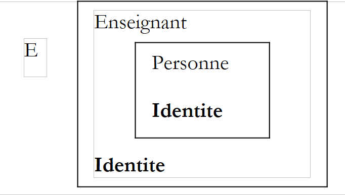
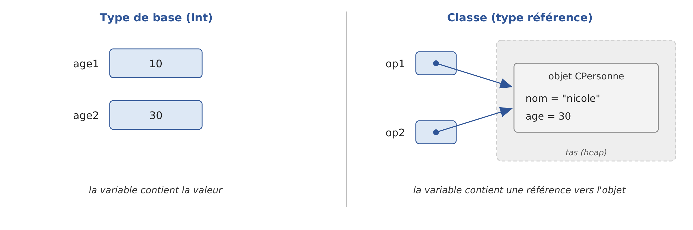

4. Classes, interfaces, classes de données
4.1. L'objet par l'exemple
4.1.1. Généralités
Nous abordons maintenant, par l'exemple, la programmation objet. Un objet est une entité qui contient des données qui définissent son état (on les appelle des champs, attributs, propriétés…) et des fonctions (on les appelle des méthodes). Un objet est créé selon un modèle qu'on appelle une classe. Une classe [C1] déclare par exemple deux propriétés [var p1: Type1] et [var p2: Type2] et deux méthodes [fun m3(...): Type3 { ... }] et [fun m4(...): Type4 { ... }], le tout entre les accolades de la déclaration [class C1 { ... }].
À partir de la classe [C1], on peut créer de nombreux objets [o1], [o2], … Tous auront les propriétés [p1], [p2], … et les méthodes [m3], [m4], … Mais ils auront des valeurs différentes pour leurs propriétés [pi], ayant ainsi chacun un état qui leur est propre. Si [o1] est un objet de type [C1], [o1.p1] désigne la propriété [p1] de [o1] et [o1.m3(...)] l'appel de la méthode [m3] de [o1].
Considérons un premier modèle d'objet : la classe [Personne].
4.1.2. Un programme formé de plusieurs fichiers
Dans les exemples du chapitre précédent, un programme tenait dans un unique fichier source. À partir de maintenant, un programme pourra être formé de plusieurs fichiers source : par exemple une classe par fichier, plus le programme principal. Contrairement à Java, Kotlin n'impose aucun lien entre le nom d'un fichier et les classes qu'il contient : un fichier peut contenir plusieurs classes et des fonctions de haut niveau. La convention, que nous suivrons, est néanmoins de placer une classe importante dans un fichier qui porte son nom : la classe [Personne] est dans le fichier [Personne.kt].
Les programmes de ce chapitre sont rassemblés dans le projet Gradle [04-classes], construit comme celui du chapitre précédent ([03-bases]) : chaque programme est un paquetage du dossier [src/main/kotlin]. Le programme de plusieurs fichiers que nous étudions est le paquetage [personnes] :
Les deux fichiers commencent par la ligne [package personnes] : ils appartiennent au même paquetage et se voient sans importation. Le fichier [Main.kt] contient la fonction [main] de haut niveau ; le compilateur la place dans une classe JVM nommée d'après le fichier, [MainKt], dont le nom complet est [personnes.MainKt]. C'est ce nom que l'on donne à Gradle pour exécuter le programme :
Gradle compile tous les fichiers du projet, puis exécute la fonction [main] de la classe indiquée. Dans IntelliJ IDEA, il suffit de cliquer sur le triangle vert affiché dans la marge, devant la fonction [main]. Le compilateur écrit un fichier [.class] (du code intermédiaire, le « bytecode » de la JVM) par classe : ici [personnes/Personne.class] et [personnes/MainKt.class], dans le dossier [build] du projet.
4.1.3. Définition de la classe Personne
La définition de la classe [Personne] dans le fichier source [Personne.kt] sera la suivante :
- ligne 1 : la classe appartient au paquetage [personnes]. Les paquetages sont présentés plus loin dans ce chapitre ;
- ligne 3 : la classe n'est précédée d'aucun mot clé de visibilité : elle est publique, utilisable par toutes les autres classes. En Kotlin, [public] est la visibilité par défaut ;
- lignes 5-7 : les trois propriétés de la classe. Le mot clé [var] indique qu'elles sont modifiables (le mot clé [val] les rendrait en lecture seule). Kotlin exige qu'une propriété reçoive une valeur initiale (ici la chaîne vide et 0) : contrairement à Java, il n'y a pas de valeur par défaut implicite ([null], 0, [false]). Le type des propriétés, [String] et [Int], est déduit de ces valeurs initiales, comme pour une variable locale ;
- lignes 10-13 : une méthode qui fixe l'état de l'objet ;
- lignes 17-18 : une méthode qui affiche l'état de l'objet.
Nous avons ici la définition d'une classe, donc d'un type de données. Lorsqu'on va créer des variables de ce type, on les appellera des objets ou des instances de classe. Une classe est donc un moule à partir duquel sont construits des objets. Par convention, le nom d'une classe commence par une majuscule ([Personne]), celui d'une propriété ou d'une méthode par une minuscule ([prenom], [initialise]).
Kotlin parle de propriétés plutôt que de champs : nous verrons un peu plus loin qu'une propriété est un champ accompagné de ses méthodes de lecture et d'écriture, comme les propriétés du C#. Une propriété privée, comme ici, se réduit à un simple champ. Les membres d'une classe peuvent être des données (propriétés) ou des méthodes (fonctions). Ces membres peuvent être accompagnés de l'un des mots clés suivants :
Mot clé | Accès |
[private] | un membre privé n'est accessible que par les seules méthodes de la classe |
[protected] | un membre protégé est accessible par les méthodes de la classe et par celles des classes dérivées (voir plus loin le concept d'héritage). Contrairement à Java, il ne l'est pas des autres classes du paquetage |
[internal] | un membre interne est accessible par toute méthode du même module, c'est-à-dire de l'ensemble des fichiers compilés ensemble (un projet ou sous-projet Gradle, un module d'IntelliJ IDEA) |
[public] | un membre public est accessible par toute méthode, définie ou non au sein de la classe. C'est l'accès par défaut, en l'absence de mot clé |
En général, les données d'une classe sont déclarées privées alors que ses méthodes sont publiques. Cela signifie que l'utilisateur d'un objet (le programmeur) :
- n'aura pas accès directement aux données privées de l'objet ;
- pourra faire appel aux méthodes publiques de l'objet et notamment à celles qui donneront accès à ses données privées.
L'ordre de déclaration des membres est quelconque. On notera que l'accès par défaut est l'accès public, à l'inverse de Java, dont l'accès par défaut est l'accès paquetage : en Kotlin, il faut penser à écrire [private] pour cacher un membre. Kotlin n'a pas d'accès « paquetage » ; l'accès [internal], au niveau du module, en tient lieu.
Les mots clés [private], [internal] et [public] s'appliquent aussi aux déclarations de haut niveau (classes, fonctions, propriétés écrites hors de toute classe). Une déclaration de haut niveau [private] n'est visible que dans son fichier.
4.1.4. La méthode initialise
Quel est le rôle de la méthode [initialise] ? Parce que [nom], [prenom] et [age] sont des données privées de la classe [Personne], une instruction comme [p1.prenom = "Jean"], écrite dans le programme principal, est illégale. Le compilateur la refuse :
Le message indique le fichier, la ligne et la colonne de l'erreur ([5:8]), puis la souligne par des accents circonflexes. Dans IntelliJ IDEA, l'erreur est soulignée en rouge dès la saisie, et Gradle affiche le même message, précédé de [e:] et du chemin complet du fichier. Le message est en anglais : le compilateur Kotlin n'a pas de traduction française de ses messages. Il nous faut initialiser un objet de type [Personne] via une méthode publique. C'est le rôle de la méthode [initialise]. On écrira [p1.initialise("Jean", "Dupont", 30)]. Cette écriture est légale car [initialise] est d'accès public.
4.1.5. La création d'un objet : pas d'opérateur new
Il manque pourtant encore quelque chose. Il faut créer l'objet. Dans le programme [Main.kt], c'est l'expression [Personne()] qui crée un objet de type [Personne] : on « appelle » la classe comme une fonction. Kotlin n'a pas d'opérateur [new], à la différence de Java et de C#. L'objet créé est non encore initialisé : ses propriétés ont leur valeur initiale, ici la chaîne vide pour [nom] et [prenom] et 0 pour [age].
La déclaration [val p1 = Personne()] déclare [p1] comme une référence à cet objet. Si on déclare la variable sans l'initialiser, [val p1: Personne], puis qu'on écrit [p1.initialise("Jean", "Dupont", 30)], on fait appel à la méthode [initialise] d'un objet qui n'existe pas et le compilateur signale l'erreur : la variable [p1] n'a pas reçu de valeur.
En Java, on peut écrire [Personne p1 = null;] pour indiquer que la variable ne référence encore aucun objet ; l'appel [p1.initialise(...)] est accepté par le compilateur et provoque à l'exécution une exception [NullPointerException]. Kotlin, nous l'avons vu au chapitre précédent, distingue les types qui admettent la valeur [null] de ceux qui ne l'admettent pas. Le type [Personne] ne l'admet pas :
Le type [Personne?] l'admet, mais le compilateur refuse alors l'appel direct d'une méthode :
Il faut écrire [p1?.initialise(...)], qui n'appelle la méthode que si [p1] n'est pas [null], ou [p1!!.initialise(...)], qui affirme au compilateur que [p1] n'est pas [null]. Dans ce dernier cas, si l'affirmation est fausse, on retrouve à l'exécution l'exception de Java :
Les erreurs que Java découvre à l'exécution sont ainsi, pour la plupart, découvertes par le compilateur Kotlin. Pour que [p1] référence un objet, on écrit [val p1 = Personne()]. Maintenant que [p1] référence un objet, l'instruction d'initialisation de cet objet [p1.initialise("Jean", "Dupont", 30)] est valide.
4.1.6. Le mot clé this
Regardons le code de la méthode [initialise] :
L'instruction [this.prenom = p] signifie que la propriété [prenom] de l'objet courant ([this]) reçoit la valeur [p]. Le mot clé [this] désigne l'objet courant : celui sur lequel la méthode est exécutée. Comment le connaît-on ? Regardons comment se fait l'initialisation de l'objet référencé par [p1] dans le programme appelant : [p1.initialise("Jean", "Dupont", 30)]. C'est la méthode [initialise] de l'objet [p1] qui est appelée. Lorsque, dans cette méthode, on référence l'objet [this], on référence en fait l'objet [p1].
Lorsqu'une méthode d'un objet référence une propriété [a] de cet objet, l'écriture [this.a] est implicite : la méthode [initialise] aurait pu écrire [prenom = p] et [nom = n]. On doit utiliser [this] explicitement lorsqu'il y a conflit d'identificateurs. C'est le cas de l'instruction [this.age = age] (ligne 4) où [age] désigne à la fois une propriété de l'objet courant et le paramètre [age] reçu par la méthode. Dans la méthode, le nom [age] seul désigne le paramètre ; il faut désigner la propriété par [this.age]. On remarquera au passage qu'un paramètre de fonction est en lecture seule : l'instruction [age = 0] écrite dans la méthode serait refusée par le compilateur.
4.1.7. Un programme de test
Voici un court programme de test. Celui-ci est écrit dans le fichier source [Main.kt] :
- ligne 4 : la fonction [main] est le point d'entrée du programme. Comme au chapitre précédent, c'est une fonction de haut niveau, écrite hors de toute classe ;
- ligne 6 : création d'un objet [Personne] référencé par [p1]. La classe [Personne] appartenant au même paquetage, elle est connue sans importation. Le type de [p1], [Personne], est déduit par le compilateur ;
- ligne 7 : initialisation de l'objet ;
- ligne 8 : affichage de son état.
Résultats :
4.1.8. Plusieurs classes dans un fichier
Pour un exemple court, un paquetage de plusieurs fichiers est inutilement lourd. Comme au chapitre précédent, nous écrirons alors un unique fichier, [Classes01.kt] par exemple, qui contient la fonction [main], éventuellement d'autres fonctions, et les classes dont le programme a besoin. Chaque fichier est placé dans un paquetage à son nom ([classes01]), ce qui permet à chacun des programmes du projet d'avoir sa propre classe [Personne] : la classe [Personne] du fichier [Classes01.kt] a pour nom complet [classes01.Personne], celle du fichier [Classes02.kt] [classes02.Personne], etc. On l'exécute avec la commande [gradlew -q run -Pmain=classes01.Classes01Kt].
Il faut savoir comment le compilateur traite un tel fichier. Les classes du fichier sont des classes ordinaires, de haut niveau, exactement comme si elles étaient écrites dans leur propre fichier ; les fonctions de haut niveau, dont [main], sont rassemblées dans une classe nommée d'après le fichier, [Classes01Kt]. La compilation du fichier le montre :
Cela a une conséquence qui distingue Kotlin de Java. En Java, les classes d'un fichier source compact sont imbriquées dans une classe implicite et partagent leurs membres privés avec la méthode [main] du fichier. En Kotlin, il n'y a pas de classe englobante : un membre [private] d'une classe reste inaccessible à la fonction [main], même si elle est écrite dans le même fichier. Les exemples courts de ce chapitre montreront donc les mêmes erreurs de compilation que le programme [personnes].
4.1.9. Une autre méthode initialise : la surcharge
Considérons toujours la classe [Personne] et ajoutons-lui une seconde méthode [initialise]. Le programme [Classes01.kt] est le suivant :
- ligne 2 : le paquetage du programme ;
- lignes 4-10 : le programme principal ;
- ligne 14 : la classe [Personne] est déclarée après la fonction [main]. En Kotlin, l'ordre des déclarations d'un fichier est indifférent ;
- lignes 21-24 : la méthode [initialise] du paragraphe précédent ;
- lignes 28-31 : une seconde méthode [initialise].
On a maintenant deux méthodes portant le nom [initialise] : c'est légal tant qu'elles admettent des paramètres différents (en nombre ou en type). On dit que la méthode [initialise] est surchargée. Le compilateur choisit la méthode à appeler d'après les paramètres effectifs : [p1.initialise("Jean", "Dupont", 30)] (ligne 6) appelle la première, [p2.initialise(p1)] (ligne 9) appelle la seconde. Le type du résultat ne suffit pas à distinguer deux méthodes : deux méthodes de même nom et de mêmes paramètres qui ne différeraient que par leur type de retour seraient refusées. Nous verrons qu'en Kotlin, les valeurs par défaut des paramètres évitent souvent d'écrire plusieurs versions d'une même méthode.
Le paramètre de la seconde méthode est une référence [p] à une personne. Les propriétés de la personne [p] sont alors affectées à l'objet courant ([this]). On remarquera que la méthode [initialise] a un accès direct aux propriétés de l'objet [p] bien que celles-ci soient privées (lignes 29-31). C'est toujours vrai : une méthode d'une classe [C] a accès aux membres privés de tous les objets de la même classe [C].
Résultats :
4.1.10. Constructeurs de la classe Personne
Un constructeur est une fonction appelée lors de la création de l'objet. On s'en sert généralement pour l'initialiser. Il peut accepter des paramètres mais ne rend aucun résultat. Si une classe [C] a un constructeur acceptant n paramètres, la création d'un objet de cette classe s'écrira [val objet = C(arg1, arg2, ... argn)].
Lorsqu'une classe [C] a un ou plusieurs constructeurs, l'un de ces constructeurs doit obligatoirement être utilisé pour créer un objet de cette classe. Si une classe [C] ne déclare aucun constructeur, elle en a un par défaut, sans paramètres, qui ne fait rien. Les propriétés de l'objet gardent alors leurs valeurs initiales. C'est ce qui s'est passé dans les programmes précédents, où on avait écrit [Personne()].
Kotlin distingue deux sortes de constructeurs :
- le constructeur primaire (« primary constructor »), au plus un par classe, déclaré dans l'en-tête de la classe, juste après son nom : [class Personne(prenom: String, nom: String, age: Int)] ;
- les constructeurs secondaires, déclarés dans le corps de la classe avec le mot clé [constructor]. Lorsque la classe a un constructeur primaire, chaque constructeur secondaire doit l'appeler, directement ou par l'intermédiaire d'un autre constructeur secondaire.
Le programme [Classes02.kt] donne trois constructeurs à la classe [Personne] :
- ligne 15 : le constructeur primaire. Ses trois paramètres sont précédés de [private val] : c'est une écriture abrégée qui déclare à la fois un paramètre du constructeur et une propriété privée, en lecture seule, de même nom, initialisée avec la valeur du paramètre. La classe n'a pas d'autre propriété : celles-ci sont déclarées dans l'en-tête ;
- ligne 17 : le constructeur secondaire de copie. L'écriture [: this(p.prenom, p.nom, p.age)] appelle le constructeur de la même classe qui accepte trois paramètres [String], [String], [Int], ici le constructeur primaire. On dit que les constructeurs sont chaînés. Le code d'initialisation n'est ainsi écrit qu'une fois. Ce constructeur n'a pas de corps : il n'a rien d'autre à faire ;
- ligne 20 : le constructeur secondaire sans paramètres, chaîné lui aussi au constructeur primaire. Comme la classe a déclaré un constructeur primaire avec paramètres, elle n'a plus de constructeur par défaut : si on veut pouvoir écrire [Personne()], il faut le déclarer ;
- lignes 4-10 : les trois constructeurs sont utilisés.
L'écriture abrégée de la ligne 15 est équivalente à l'écriture suivante, plus longue, où les paramètres du constructeur primaire, sans [val], ne sont que des paramètres, utilisés pour initialiser des propriétés déclarées dans le corps de la classe :
C'est bien plus court que la version Java, où il faut déclarer les champs, puis les initialiser un par un dans le constructeur ([this.prenom = prenom;]…). Le constructeur primaire n'a pas de corps : les instructions à exécuter à la construction de l'objet sont placées dans des blocs [init], que nous verrons un peu plus loin. Nous verrons aussi que, grâce aux valeurs par défaut des paramètres, Kotlin se passe souvent des constructeurs secondaires : [class Personne(..., private val age: Int = 0)] permet d'écrire aussi bien [Personne("Jean", "Dupont", 30)] que [Personne("Jean", "Dupont")].
Résultats :
4.1.11. Les références d'objets
Nous utilisons la classe [Personne] du programme précédent, sans son constructeur sans paramètres mais avec la méthode [initialise(String, String, Int)] du début du chapitre. Ses propriétés sont donc déclarées avec [var] et non plus [val]. Le programme de test devient le suivant [Classes03.kt] :
La fonction [print] (lignes 7, 10, …) écrit son paramètre sans passer à la ligne. Les deux instructions de ces lignes sont séparées par un point-virgule, qui n'est nécessaire en Kotlin que pour écrire plusieurs instructions sur une même ligne. Résultats :
Lorsqu'on déclare la variable [p1] par [val p1 = Personne("Jean", "Dupont", 30)] (ligne 6), [p1] référence l'objet [Personne("Jean", "Dupont", 30)] mais n'est pas l'objet lui-même. En C, on dirait que c'est un pointeur, c'est-à-dire l'adresse de l'objet créé. Si [p1] était déclarée [var p1: Personne? = ...] et qu'on écrivait ensuite [p1 = null], ce ne serait pas l'objet [Personne("Jean", "Dupont", 30)] qui serait modifié, mais la référence [p1] qui changerait de valeur. L'objet serait « perdu » s'il n'était référencé par aucune autre variable : la mémoire qu'il occupe serait récupérée plus tard par le ramasse-miettes (« garbage collector ») de la machine virtuelle Java, qui exécute les programmes Kotlin comme les programmes Java.
Lorsqu'on écrit [val p2 = p1] (ligne 9), on initialise la référence [p2] : elle « pointe » sur le même objet (elle désigne le même objet) que la référence [p1]. Ainsi si on modifie l'objet « pointé » (ou référencé) par [p1], on modifie aussi celui référencé par [p2] (lignes 4-5 des résultats). On notera que [p1] et [p2] sont déclarées avec [val] : le mot clé interdit de changer la référence contenue dans la variable, pas de modifier l'objet référencé, ce que fait l'appel [p1.initialise(...)] (ligne 15).
Lorsqu'on écrit [val p3 = Personne(p1)] (ligne 12), il y a création d'un nouvel objet [Personne]. Ce nouvel objet sera référencé par [p3]. Si on modifie l'objet référencé par [p1], on ne modifie en rien celui référencé par [p3] (ligne 6 des résultats).
Enfin, ligne 22, l'opérateur [===] appliqué à deux références d'objets indique si elles désignent le même objet : [p1] et [p2] désignent le même objet, [p1] et [p3] deux objets différents, bien que de même contenu (ligne 7 des résultats). C'est l'opérateur [] de Java. En Kotlin, l'opérateur [] compare les contenus des objets, en appelant leur méthode [equals] : nous verrons plus loin comment la définir. Pour une classe qui ne définit pas [equals], comme ici, [p1 == p3] compare encore les références et vaut [false].
4.1.12. Passage de paramètres de type référence d'objet
Dans le chapitre précédent, nous avons vu que Kotlin, comme Java, passe les paramètres d'une fonction par valeur : la fonction reçoit une copie de la valeur du paramètre effectif. Voyons ce que cela signifie lorsque le paramètre est une référence d'objet. Nous utilisons pour cela la classe [StringBuilder] (la classe du JDK, que Kotlin utilise directement). Un objet [String] ne peut pas être modifié : une opération comme [s.uppercase()] rend un nouvel objet [String]. Un objet [StringBuilder], au contraire, est une chaîne modifiable : sa méthode [append] ajoute des caractères à la chaîne sans créer de nouvel objet.
En Java, l'exemple affectait un nouvel objet au paramètre [sbf1] de la fonction appelée. C'est impossible en Kotlin : un paramètre de fonction est en lecture seule, comme une variable [val]. Le compilateur refuse l'instruction [sbf1 = StringBuilder("essai1*****")] :
Le programme [Classes04.kt] copie donc le paramètre [sbf1] dans une variable locale modifiable :
- lignes 5-6 : deux références [sb0] et [sb1] à des objets de type [StringBuilder] ;
- ligne 8 : elles sont passées à la fonction [changeStringBuilder], dont le résultat, une troisième référence, est affecté à [sb2] ;
- lignes 13-24 : une fonction de haut niveau, qui a les paramètres formels [sbf0] et [sbf1]. Au démarrage de la fonction, [sbf0] et [sb0] sont deux références distinctes qui pointent sur le même objet : la référence [sb0] a été copiée dans [sbf0] (passage par valeur des références). Il en est de même pour [sbf1] et [sb1] ;
- lignes 19-20 : la variable locale [sbl] reçoit d'abord la référence [sbf1], puis la référence d'un nouvel objet. C'est ce que faisait le programme Java avec le paramètre [sbf1] lui-même.
Résultats :
Explications :
- [sb0] et [sbf0] sont deux références distinctes sur le même objet. Celui-ci a été modifié via [sbf0] (ligne 16). Cette modification est visible via [sb0] (ligne 4 des résultats) ;
- [sb1], [sbf1] et, au départ, [sbl] sont trois références distinctes sur le même objet. [sbl] reçoit une nouvelle valeur et pointe désormais sur un nouvel objet (ligne 20). Cela ne change en rien la valeur de [sbf1] ni celle de [sb1], qui continuent à pointer sur l'objet d'origine, non modifié (lignes 3 et 4 des résultats) ;
- une fonction Kotlin ne peut donc pas changer la valeur d'une variable de l'appelant. Pour transmettre un nouvel objet à l'appelant, elle le rend comme résultat (lignes 22 et 24). Lorsqu'il y a plusieurs résultats, on les rassemble dans un objet : une paire ([Pair]), vue au chapitre précédent, ou une classe de données (voir plus loin).
Retenons qu'une fonction peut modifier l'objet référencé par un paramètre, mais pas la variable de l'appelant qui contient la référence. Comme Java, et contrairement à C#, Kotlin n'a pas de passage de paramètres par référence ; il va plus loin que Java en interdisant toute affectation à un paramètre, ce qui évite de confondre le paramètre et la variable de l'appelant.
4.1.13. Les objets temporaires
Dans une expression, on peut faire appel explicitement au constructeur d'un objet : celui-ci est construit, mais nous n'avons pas de variable pour y accéder ultérieurement (pour le modifier par exemple). Cet objet temporaire est construit pour les besoins de l'évaluation de l'expression puis abandonné. L'espace mémoire qu'il occupait sera automatiquement récupéré ultérieurement par le ramasse-miettes, dont le rôle est de récupérer l'espace mémoire occupé par des objets qui ne sont plus référencés par les données du programme.
Considérons le programme [Classes05.kt] suivant, où les constructeurs de la classe [Personne] affichent un message. C'est l'occasion de présenter le bloc d'initialisation [init] :
- ligne 5 : l'objet [Personne("Jean", "Dupont", 30)] est construit puis passé au constructeur de copie qui construit un second objet, dont on appelle la méthode [identifie]. Aucun des deux objets n'est référencé par une variable ;
- lignes 9-11 : le constructeur primaire n'ayant pas de corps, les instructions à exécuter à la construction de l'objet sont placées dans un bloc [init]. Une classe peut avoir plusieurs blocs [init] : ils sont exécutés, avec les initialisations des propriétés déclarées dans le corps de la classe, dans l'ordre où ils sont écrits. Ils font partie du constructeur primaire et ont accès à ses paramètres ;
- lignes 15-16 : un constructeur secondaire peut avoir un corps. Il est exécuté après le constructeur appelé par [: this(...)], ici le constructeur primaire avec ses blocs [init].
Résultats :
Les résultats montrent la construction successive des deux objets temporaires. Le premier est construit par le constructeur primaire (ligne 1 des résultats). Le second est construit par le constructeur secondaire, qui commence par appeler le constructeur primaire, d'où l'exécution du bloc [init] (ligne 2), puis exécute son propre corps (ligne 3). En Java, le constructeur de copie de l'exemple n'était pas chaîné au constructeur primaire et n'affichait que son propre message ; en Kotlin, dès lors qu'une classe a un constructeur primaire, tout objet passe par lui : les blocs [init] sont toujours exécutés.
4.1.14. Les propriétés : accesseurs et modifieurs
En Java, l'usage est de déclarer des champs privés et de donner accès à leur valeur par des méthodes publiques : les accesseurs (« getters »), comme [getAge()], et les modifieurs (« setters »), comme [setAge(int)]. Ces méthodes s'écrivent à la main (ou sont générées par l'environnement de développement), et l'utilisateur de la classe écrit [p.setAge(p.getAge() + 1)]. Kotlin, comme C#, a des propriétés : une propriété publique est une donnée que l'utilisateur lit et écrit avec la notation pointée, comme un champ, mais dont la lecture et l'écriture passent en réalité par un accesseur et un modifieur. Le compilateur les génère. Le programme [Classes06.kt] le montre :
- ligne 14 : la classe [Personne] tient en une ligne. Les trois paramètres du constructeur primaire sont précédés de [var] : ce sont trois propriétés publiques (visibilité par défaut), en lecture et écriture. La classe n'ayant pas de corps, les accolades sont omises ;
- ligne 7 : la lecture des propriétés [p.prenom], [p.nom], [p.age]. Chaque lecture est un appel de l'accesseur de la propriété ;
- ligne 9 : l'écriture de la propriété [age], c'est-à-dire l'appel de son modifieur.
Résultats :
L'outil [javap] du JDK, qui affiche le contenu d'un fichier [.class], montre ce que le compilateur Kotlin a produit pour la classe [Personne] (l'option [-p] affiche aussi les membres privés) :
Chaque propriété a donné un champ privé (lignes 3-5), un accesseur et un modifieur publics (lignes 7-12), qui suivent la convention de nommage établie dès les débuts de Java, celle des « JavaBeans » : l'accesseur de la propriété [age] s'appelle [getAge], son modifieur [setAge] ; une propriété booléenne dont le nom commence par [is], comme [isActif], a un accesseur de même nom, [isActif], et un modifieur [setActif]. C'est important : beaucoup de bibliothèques Java (Jackson pour le JSON, Hibernate pour les bases de données, que nous utiliserons plus loin) s'appuient sur cette convention pour trouver les données d'un objet ; elles trouvent celles des objets Kotlin sans difficulté. Inversement, un programme Kotlin qui utilise une classe Java écrit [p.age] pour appeler [p.getAge()], et [p.age = 56] pour appeler [p.setAge(56)]. On remarque aussi que la classe et ses méthodes sont [final] : nous verrons avec l'héritage qu'en Kotlin, classes et méthodes sont finales par défaut.
L'écriture [p.age = 56] ressemble à l'affectation d'un champ public. La différence est importante : parce qu'elle passe par un modifieur, on peut, sans rien changer au code des utilisateurs de la classe, donner plus tard à la propriété un modifieur qui contrôle les valeurs reçues. C'est l'objet du paragraphe suivant. En Kotlin, on n'écrit donc jamais d'accesseurs ni de modifieurs à la Java : on déclare des propriétés.
4.1.15. Des modifieurs qui vérifient les valeurs reçues
L'intérêt des modifieurs, par rapport à des champs publics, est de pouvoir contrôler les valeurs affectées aux champs : un modifieur peut vérifier la validité de la valeur reçue et lancer une exception si elle est invalide. Kotlin permet de donner à une propriété un accesseur ([get]) et un modifieur ([set]) personnalisés. Considérons le programme [Classes07.kt] :
Les trois propriétés ont un modifieur personnalisé qui vérifie la valeur reçue :
- lignes 39-44 : la propriété [prenom]. Sa déclaration est suivie, sur les lignes suivantes, de la définition de son modifieur, [set(value) { ... }]. Le paramètre [value] est la valeur affectée à la propriété (le nom [value] est conventionnel, comme en C#) ; son type est celui de la propriété. La propriété n'a pas d'accesseur personnalisé : elle garde l'accesseur généré, qui rend la valeur mémorisée ;
- ligne 42 : la fonction [require(condition) { message }], vue au chapitre précédent, lance une exception [IllegalArgumentException], l'exception prévue pour signaler un paramètre invalide, si la condition est fausse. Le message, calculé par la lambda entre accolades, n'est construit que dans ce cas. La fonction [isNotBlank] rend [true] si la chaîne contient au moins un caractère autre qu'un espace. Il n'y a pas à tester la valeur [null] comme en Java : la propriété est de type [String], et non [String?], et le compilateur interdit de lui affecter [null] ;
- ligne 44 : dans un accesseur ou un modifieur, le mot clé [field] désigne le champ qui mémorise la valeur de la propriété (on l'appelle le « backing field »). Il ne faut pas écrire [prenom = value] : ce serait un appel du modifieur lui-même, qui s'appellerait indéfiniment ;
- lignes 47-58 : les propriétés [nom] et [age] sont construites sur le même modèle ;
- ligne 37 : la classe a un constructeur primaire sans paramètres. Les valeurs initiales des propriétés ([""] et 0) sont affectées directement aux champs, sans passer par les modifieurs ;
- lignes 62-65 : un constructeur secondaire qui initialise l'objet via les modifieurs. Il profite ainsi des vérifications faites par les modifieurs, qui ne sont écrites qu'à un endroit. Ici, [this.prenom = prenom] est l'appel du modifieur de la propriété [prenom] avec la valeur du paramètre [prenom].
Pourquoi ne pas avoir écrit [class Personne(prenom: String, nom: String, age: Int)] avec des propriétés initialisées par [var age = age] ? Parce que l'initialisation d'une propriété à sa déclaration affecte directement le champ, sans appeler le modifieur : un âge de -4 serait accepté sans erreur. Pour vérifier les valeurs reçues par le constructeur primaire, on écrit les vérifications dans un bloc [init], ou, comme ici, on fait passer les valeurs par les modifieurs.
En Java, les modifieurs appelés par le constructeur devaient être déclarés [final] : sinon, une classe dérivée aurait pu les redéfinir, et le constructeur de la classe parent aurait appelé la nouvelle version avant même que le constructeur de la classe dérivée ait été exécuté. En Kotlin, les classes et leurs membres sont finaux par défaut : la précaution est inutile.
Résultats :
La ligne 3 des résultats montre que l'affectation [p.age = -4] (ligne 10) a été refusée par le modifieur : [ex.message] est le message de l'exception. Lignes 15-18, une personne est créée avec le constructeur sans paramètres puis initialisée par ses modifieurs. Lignes 21-23, le nom formé d'un espace est refusé (ligne 5 des résultats). Lignes 29-30, le constructeur à trois paramètres refuse le prénom vide (ligne 6 des résultats).
Java n'a pas d'initialiseur d'objet, syntaxe qui permettrait de fixer plusieurs propriétés dans l'expression de création de l'objet elle-même. Kotlin non plus, mais il offre deux solutions équivalentes : les paramètres nommés et à valeur par défaut des constructeurs, et la fonction [apply]. Nous les présentons dans les deux paragraphes suivants.
4.1.16. Les propriétés en lecture seule et les paramètres facultatifs
Une propriété déclarée avec [val] doit recevoir une valeur une fois et une seule, à sa déclaration, dans le constructeur primaire ou dans un bloc [init] ; elle ne peut plus être modifiée ensuite. Le compilateur le vérifie. C'est l'équivalent du champ [final] de Java : la propriété n'a qu'un accesseur, pas de modifieur. Le programme [Classes08.kt] présente plusieurs cas, ainsi que les paramètres à valeur par défaut et les arguments nommés :
- ligne 33 : le prénom est une propriété [var], en lecture et écriture ; le nom et la ville sont des propriétés [val], en lecture seule. Le constructeur leur donne une valeur, qui ne pourra plus changer. Le paramètre [age], sans [val] ni [var], n'est qu'un paramètre du constructeur ;
- lignes 35-36 : la propriété [age] est initialisée avec le paramètre [age]. Elle est lisible par tous mais son modifieur est privé ([private set]) : elle n'est modifiable que par les méthodes de la classe, comme [vieillir] (lignes 43-44). Le modifieur garde son comportement par défaut : il n'a pas besoin de corps ;
- lignes 39-40 : une propriété calculée. Elle a un accesseur personnalisé, [get() = ...], qui calcule sa valeur à chaque lecture à partir des autres propriétés ; elle n'a pas de champ pour mémoriser une valeur. Pour l'utilisateur de la classe, rien ne la distingue d'une autre propriété : [p.identite] (ligne 7). C'est l'équivalent de la méthode [getIdentite()] de la version Java ;
- lignes 14-16 : trois instructions que le compilateur refuse, pour les raisons données en commentaires. Si on les décommente, le compilateur signale (on a aussi décommenté l'instruction [Contact(null)] évoquée ligne 24) :
- ligne 49 : la classe [Contact] a une propriété obligatoire, l'email, et une propriété facultative, le téléphone. Le caractère facultatif du téléphone s'exprime par une valeur par défaut du paramètre [telephone] du constructeur : [val telephone: String = "inconnu"]. Si l'argument est omis, comme ligne 19, le paramètre prend cette valeur. En Java, qui n'a pas de paramètres facultatifs, il fallait un second constructeur, chaîné au premier ; en Kotlin, un seul constructeur suffit. Les valeurs par défaut s'utilisent de la même façon pour les paramètres de toute fonction ;
- ligne 22 : les arguments sont nommés : [telephone = "02 41 00 00 00"]. On peut alors les donner dans un ordre quelconque, et l'appel est plus lisible lorsque plusieurs paramètres ont le même type. Les arguments nommés permettent aussi de n'omettre qu'un paramètre facultatif parmi d'autres : avec [f(a: Int = 0, b: Int = 0)], on peut écrire [f(b = 5)] ;
- lignes 51-52 : le caractère obligatoire de l'email s'exprime d'abord par le type du paramètre : [String] n'admet pas la valeur [null], et l'appel [Contact(null)] est refusé à la compilation (dernière erreur ci-dessus). En Java, il fallait le vérifier à l'exécution ([Objects.requireNonNull]). Reste à refuser un email vide : c'est le rôle du bloc [init], exécuté à la construction de l'objet. Ligne 26, un email formé d'un espace est refusé.
Résultats :
On remarquera combien les déclarations sont courtes : la classe [Personne], qui occupait une cinquantaine de lignes en Java avec ses accesseurs et son modifieur, en occupe une quinzaine en Kotlin.
4.1.17. Les fonctions apply et also à la place des modifieurs fluides
En Java, lorsqu'un objet a beaucoup de champs facultatifs, les constructeurs se multiplient et les appels de modifieurs s'allongent. Une technique répandue consiste à faire rendre l'objet courant ([this]) par chaque modifieur : les appels peuvent alors être enchaînés, on parle de méthodes « fluides » : [new Personne().setPrenom("jean").setNom("Dupont").setAge(30)]. En Kotlin, les paramètres à valeur par défaut et les arguments nommés rendent la technique bien moins utile. Et lorsqu'on veut fixer plusieurs propriétés d'un objet juste après sa création, la bibliothèque standard fournit des fonctions de portée (« scope functions »), utilisables avec n'importe quel objet, dont [apply] et [also]. Le programme [Classes09.kt] les illustre, et présente au passage les propriétés [lateinit] :
- lignes 7-10 : [objet.apply { ... }] exécute le bloc entre accolades avec [objet] comme objet courant : dans le bloc, [prenom = " jean "] signifie [this.prenom = " jean "], où [this] est la nouvelle personne. Puis [apply] rend l'objet lui-même, qui est affecté à [p]. L'écriture tient lieu d'initialiseur d'objet ; chaque affectation passe par le modifieur de la propriété et donc par ses vérifications ;
- lignes 39-46 : les modifieurs du prénom et du nom affectent au champ la valeur rendue par la fonction [verifier] ;
- lignes 64-66 : les vérifications du prénom et du nom, identiques, sont factorisées dans la fonction [verifier]. Elle n'utilise aucune propriété d'une personne : nous en avons fait une fonction de haut niveau, déclarée [private], donc visible uniquement dans le fichier [Classes09.kt]. En Java, il fallait en faire une méthode statique privée de la classe. La fonction [trim] rend la chaîne débarrassée de ses espaces de début et de fin ;
- ligne 59 : le type de la propriété calculée [identite], [String], est déduit de l'expression de son accesseur ;
- lignes 25-26 : [objet.also { ... }] exécute le bloc en lui passant l'objet en paramètre, désigné par [it], puis rend l'objet. On l'utilise pour une action annexe, comme ici un affichage de suivi, sans interrompre l'enchaînement des appels. Ici, [apply] rend la personne, [also] l'affiche puis la rend à son tour, et elle est affectée à [p2]. Ligne 25, les trois affectations du bloc [apply] sont écrites sur une ligne, séparées par des points-virgules ;
- ligne 56 : une propriété d'un type non [null] doit en principe recevoir une valeur à sa création. Le mot clé [lateinit] (« initialisation tardive ») lève cette obligation : la propriété [ville] recevra sa valeur plus tard (ligne 33). Si on la lit avant, une exception [UninitializedPropertyAccessException] est lancée (lignes 29-31). [lateinit] ne s'applique qu'à une propriété [var] d'un type objet non [null] ([String], mais pas [Int] ni [String?]) et sans accesseur ni modifieur personnalisé. On l'utilise lorsque la valeur est fournie après la construction de l'objet, par exemple par un cadriciel d'injection de dépendances comme Spring (chapitre 6) ou par une méthode d'initialisation d'un test. À l'intérieur de la classe, l'expression [::ville.isInitialized] indique si la propriété a reçu une valeur.
Résultats :
Le prénom « jean », fourni entouré d'espaces (ligne 8), a été mémorisé sans eux (ligne 1 des résultats). Les tentatives de modification invalides ont été refusées et la personne n'a pas changé (lignes 2-4 des résultats). La ligne 6 des résultats est le message de l'exception [UninitializedPropertyAccessException].
Il existe trois autres fonctions de portée : [let], vue au chapitre précédent avec les valeurs [null], [run] et [with]. Elles diffèrent par la façon dont le bloc désigne l'objet ([this] ou [it]) et par ce qu'elles rendent (l'objet ou le résultat du bloc) :
Fonction | Objet dans le bloc | Résultat | Usage typique |
[apply] | [this] | l'objet | configurer un objet qu'on vient de créer |
[also] | [it] | l'objet | action annexe (suivi, vérification) dans un enchaînement |
[let] | [it] | le résultat du bloc | traiter une valeur non [null] : [x?.let { ... }] |
[run] | [this] | le résultat du bloc | calculer une valeur à partir d'un objet |
[with] | [this] | le résultat du bloc | [with(objet) { ... }] : plusieurs appels sur un même objet |
Pour construire des objets complexes, Java utilise souvent le patron de conception « Builder » : une classe auxiliaire, dotée de méthodes fluides, recueille les valeurs puis construit l'objet final. En Kotlin, un constructeur avec des paramètres nommés et à valeur par défaut le remplace dans la plupart des cas.
4.1.18. Les membres de classe : l'objet compagnon
Supposons qu'on veuille compter le nombre d'objets [Personne] créés dans une application. On peut soi-même gérer un compteur mais on risque d'oublier les objets temporaires qui sont créés ici ou là. Il semble plus sûr d'inclure dans le constructeur de la classe [Personne] une instruction incrémentant un compteur. Ce compteur ne peut pas être une propriété ordinaire, puisque chaque objet a ses propres propriétés : c'est une propriété de la classe elle-même et non celle d'une instance particulière de cette classe.
Java déclare un tel membre avec le mot clé [static]. Kotlin n'a pas de mot clé [static] : les membres de classe sont déclarés dans un objet compagnon ([companion object { ... }]), un objet unique, attaché à la classe, déclaré dans le corps de celle-ci. Ses membres s'utilisent avec le nom de la classe : [Personne.nbPersonnes], [Personne.inconnue()]. Voici un exemple [Classes10.kt] :
- lignes 31-37 : l'objet compagnon de la classe [Personne] ;
- lignes 33-34 : la propriété de classe [nbPersonnes], initialisée à 0 (de type [Long] grâce au suffixe [L]). Elle est lisible par tous ([Personne.nbPersonnes], ligne 8), mais son modifieur est privé : seule la classe [Personne] peut la modifier. Il est inutile d'écrire, comme en Java, un champ privé et une méthode d'accès statique [getNbPersonnes()] ;
- ligne 37 : une méthode de classe. Elle s'appelle avec le nom de la classe : [Personne.inconnue()] (ligne 10). Une méthode de l'objet compagnon n'a pas d'objet [Personne] courant : elle ne peut pas utiliser directement les propriétés d'une personne. Une méthode qui crée et rend un objet de sa classe, comme celle-ci, est appelée une fabrique (« factory ») ;
- lignes 21-22 : le bloc [init] incrémente le compteur. Il fait partie du constructeur primaire, et le constructeur de copie, chaîné au constructeur primaire, l'exécute donc aussi.
Le dernier élément du programme est un objet singleton, [Journal], déclaré par le mot clé [object] (lignes 42-48) :
- une déclaration [object Journal { ... }] déclare à la fois une classe et son unique instance, créée automatiquement lors de sa première utilisation. Il n'y a pas de constructeur : on ne peut pas créer d'autre objet [Journal]. On utilise l'objet par son nom : [Journal.ecrire(...)] ;
- un objet a un état, ici le numéro du dernier message écrit, conservé d'un appel à l'autre ;
- un objet compagnon est un cas particulier d'objet singleton : celui qui est attaché à une classe.
Résultats :
Le programme a bien compté l'objet temporaire créé ligne 7. Le journal a numéroté ses deux messages. La compilation produit une classe pour l'objet compagnon, [Personne$Companion], à côté des classes [Personne], [Journal] et [Classes10Kt] ; une méthode de l'objet compagnon est ainsi, pour la JVM, une méthode d'instance de l'objet [Personne.Companion]. Pour qu'un programme Java puisse l'appeler comme une méthode statique ([Personne.inconnue()] plutôt que [Personne.Companion.inconnue()]), on l'annote avec [@JvmStatic].
Nous utilisons depuis le début des fonctions qui, en Java, seraient des méthodes statiques : [println], [readln]… En Kotlin, ce sont des fonctions de haut niveau, déclarées hors de toute classe. C'est la façon Kotlin d'écrire ce que Java appelle une classe utilitaire, comme la classe [Math] : un fichier de fonctions de haut niveau (la bibliothèque standard offre ainsi [kotlin.math.sqrt], [kotlin.math.PI]), ou, si l'on veut regrouper des fonctions sous un nom, un [object]. L'objet compagnon est réservé à ce qui concerne vraiment la classe : fabriques, constantes, compteurs.
4.1.19. Un tableau de personnes
Un objet est une donnée comme une autre et à ce titre plusieurs objets peuvent être rassemblés dans un tableau [Classes11.kt] :
- ligne 6 : crée un tableau de 3 éléments. La fonction [arrayOfNulls<Personne>(3)] initialise ces éléments avec la valeur [null], c'est-à-dire qu'ils ne référencent aucun objet : le type du tableau est donc [Array<Personne?>], un tableau de références qui peuvent valoir [null]. Par abus de langage, on parle de tableau d'objets alors que ce n'est qu'un tableau de références d'objets. La création du tableau, qui est un objet lui-même, ne crée aucun objet du type de ses éléments : il faut le faire ensuite ;
- lignes 7-9 : création des 3 objets de type [Personne] ;
- lignes 11-12 : affichage du contenu du tableau [amis]. La variable [ami] est de type [Personne?] : le compilateur exige l'appel sécurisé [ami?.identifie()], qui ne fait rien si [ami] vaut [null].
Résultats :
Le type [Personne?] des éléments rappelle qu'un tableau créé vide en Java contient des [null]. On l'évite en Kotlin en créant le tableau avec ses éléments, comme le montre le paragraphe suivant.
4.1.20. L'inférence de type et l'initialisation des tableaux
Le programme [Classes12.kt] présente les écritures qui allègent la création des objets et des tableaux :
- ligne 6 : le type de la variable, [Personne], est déduit de l'expression qui l'initialise. La variable n'en est pas moins typée : [p1] ne pourra référencer qu'une personne. C'est l'écriture habituelle en Kotlin depuis le début du cours ; l'équivalent Java est le mot clé [var]. Kotlin va plus loin que Java : l'inférence s'applique aussi aux propriétés ([identite], ligne 38) et au type de retour des fonctions dont le corps est une expression ;
- ligne 36 : toutes les propriétés ont une valeur par défaut. Le constructeur primaire peut donc être appelé sans arguments, [Personne()] (ligne 7), et la personne reçoit ensuite ses propriétés (lignes 8-10). Il est inutile de déclarer un constructeur sans paramètres ;
- lignes 12-16 : un tableau créé et rempli par la fonction [arrayOf(...)], qui reçoit les valeurs des éléments. La taille du tableau est le nombre de valeurs ; son type, [Array<Personne>], est déduit du type des valeurs : les éléments ne peuvent pas valoir [null]. Une virgule finale (ligne 16) est tolérée dans une liste d'arguments, comme dans toute liste de paramètres : elle facilite l'ajout d'un élément ;
- ligne 18 : la variable de boucle [ami] est de type [Personne] : pas d'appel sécurisé cette fois ;
- ligne 22 : un tableau créé à la volée, passé en paramètre. On parle de tableau anonyme : il n'est référencé par aucune variable de la fonction [main]. Contrairement à Java, il n'y a pas d'écriture différente selon que le tableau est créé dans une déclaration ou ailleurs ;
- ligne 24 : le constructeur [Array(taille) { i -> ... }] crée un tableau dont chaque élément est calculé par la lambda à partir de son indice [i] ;
- lignes 29-31 : une fonction de haut niveau qui reçoit un tableau de personnes.
Résultats :
Nous utiliserons peu les tableaux d'objets : le chapitre suivant présente les listes ([List], [MutableList]), plus souples ([listOf(p1, p2)] s'écrit comme [arrayOf(p1, p2)]).
4.2. L'héritage par l'exemple
4.2.1. Généralités
Nous abordons ici la notion d'héritage. Le but de l'héritage est de « personnaliser » une classe existante pour qu'elle satisfasse à nos besoins. Supposons qu'on veuille créer une classe [Enseignant] : un enseignant est une personne particulière. Il a des attributs qu'une autre personne n'aura pas : la matière qu'il enseigne par exemple. Mais il a aussi les attributs de toute personne : prénom, nom et âge. Un enseignant fait donc pleinement partie de la classe [Personne] mais a des attributs supplémentaires. Plutôt que d'écrire une classe [Enseignant] à partir de rien, on préfère reprendre l'acquis de la classe [Personne] qu'on adapte au caractère particulier des enseignants. C'est le concept d'héritage qui nous permet cela.
Pour exprimer que la classe [Enseignant] hérite de la classe [Personne], on écrit [class Enseignant(...) : Personne(...)] : le nom de la classe parent suit le caractère deux-points, comme en C#, là où Java écrit [extends Personne].
[Personne] est appelée la classe parent (ou mère, ou de base, ou superclasse) et [Enseignant] la classe dérivée (ou fille, ou sous-classe). Un objet [Enseignant] a toutes les qualités d'un objet [Personne] : il a les mêmes propriétés et les mêmes méthodes. Ces propriétés et méthodes de la classe parent ne sont pas répétées dans la définition de la classe fille : on se contente d'indiquer les propriétés et méthodes ajoutées par la classe fille. Une classe Kotlin ne peut dériver que d'une seule classe parent.
Une différence importante avec Java : en Kotlin, une classe est finale par défaut, c'est-à-dire qu'on ne peut pas en dériver. Pour autoriser la dérivation, la classe parent doit être déclarée [open] (« ouverte »). C'est un choix délibéré des concepteurs du langage : une classe doit être conçue pour être dérivée, et celui qui l'écrit le dit explicitement.
Les exemples de ce paragraphe sont deux programmes de plusieurs fichiers, dans les paquetages [heritage1] et [heritage2]. Dans le paquetage [heritage1], la classe [Personne] est définie comme suit [Personne.kt] :
- ligne 4 : la classe est ouverte ([open]) : on peut en dériver. Le constructeur primaire a trois paramètres, qui ne sont pas des propriétés (pas de [val] ni de [var]) ;
- lignes 6-19 : trois propriétés dont le modifieur vérifie la valeur reçue (voir le programme [Classes07.kt]). Les vérifications du prénom et du nom, identiques, sont factorisées dans la fonction privée [verifier] (lignes 42-44), comme dans le programme [Classes09.kt] ;
- ligne 23 : la méthode [identifie] des premiers exemples a été remplacée par la propriété calculée [identite], qui rend l'identité de la personne au lieu de l'afficher ;
- lignes 26-31 : le bloc [init] du constructeur primaire initialise l'objet via les modifieurs des propriétés, incrémente le compteur de personnes et affiche un message de suivi. Il est placé après les déclarations des propriétés : les initialisations des propriétés et les blocs [init] sont exécutés dans l'ordre où ils sont écrits, et une propriété doit avoir été initialisée (ici avec [""] ou 0) avant d'être utilisée ;
- lignes 34-37 : le compteur de personnes du paragraphe sur l'objet compagnon.
Nous créons une classe [Enseignant] héritant de la classe [Personne] [Enseignant.kt] :
La classe [Enseignant] ajoute aux propriétés et méthodes de la classe [Personne] :
- lignes 5-6 : la classe [Enseignant] dérive de la classe [Personne]. L'en-tête est écrit sur deux lignes pour tenir dans la page ;
- ligne 5 : une propriété [section], déclarée dans le constructeur primaire ([var section: Int]), qui est le numéro de la section à laquelle appartient l'enseignant dans le corps des enseignants (une section par discipline en gros). La propriété est en lecture et écriture : elle remplace l'accesseur et le modifieur de la version Java ;
- lignes 9-10 : un bloc [init] qui affiche un message de suivi.
4.2.2. Construction d'un objet Enseignant
Une classe fille n'hérite pas des constructeurs de sa classe parent. Elle doit définir ses propres constructeurs. L'en-tête de la classe [Enseignant] est le suivant :
Le constructeur primaire reçoit quatre paramètres [prenom], [nom], [age], [section] et en passe trois ([prenom], [nom], [age]) à sa classe parent, ici la classe [Personne], avec l'écriture [: Personne(prenom, nom, age)] (ligne 2). On sait que cette classe a un constructeur [Personne(String, String, Int)] qui va permettre de construire une personne avec les paramètres passés. Une fois la construction de la partie [Personne] terminée (initialisations et blocs [init] de la classe [Personne]), la construction de l'objet [Enseignant] se poursuit par l'initialisation de sa propriété [section] et l'exécution de ses propres blocs [init]. L'écriture [: Personne(prenom, nom, age)] correspond à l'instruction [super(prenom, nom, age);] du constructeur Java ; si la classe dérivée n'a pas de constructeur primaire, chacun de ses constructeurs secondaires appelle le constructeur de la classe parent par [constructor(...) : super(...)].
En résumé, le constructeur d'une classe dérivée :
- passe à sa classe parent les paramètres dont celle-ci a besoin pour se construire ;
- utilise les autres paramètres pour initialiser les propriétés qui lui sont propres.
On aurait pu préférer initialiser directement les propriétés [prenom], [nom] et [age] dans la classe [Enseignant], avec des instructions comme [this.prenom = prenom]. C'est possible ici, car ces propriétés sont publiques et modifiables, mais ce serait une mauvaise solution, et ce serait impossible si elles étaient privées : les membres privés de la classe [Personne] ne sont accessibles qu'aux méthodes de la classe [Personne]. Tous les autres objets, y compris des objets de classes dérivées comme ici, doivent passer par des membres publics (ou protégés, [protected]). Surtout, la partie [Personne] de l'objet doit de toute façon être construite par un constructeur de la classe [Personne]. Si on écrit [: Personne()], sans arguments, le compilateur signale que les paramètres du constructeur de la classe parent manquent :
Utiliser le constructeur de la classe parent est donc la bonne solution et c'est la méthode habituelle : lors de la construction d'un objet fils, on appelle d'abord le constructeur de l'objet parent puis on complète les initialisations propres cette fois à l'objet fils ([section] dans notre exemple).
Enfin, si on oublie le mot clé [open] devant la classe [Personne], la dérivation est refusée :
4.2.3. Les méthodes héritées
La classe [Enseignant] ne définit pas de propriété [identite]. L'expression [e.identite], où [e] est un enseignant, désigne donc la propriété [identite] héritée de la classe [Personne] : elle est publique et devient par héritage une propriété publique de la classe [Enseignant]. Il en est de même pour les méthodes. Le programme de test [Main.kt] du paquetage [heritage1] est le suivant :
- ligne 5 : création d'un enseignant ;
- ligne 7 : affichage de son identité, obtenue par la propriété [identite] héritée de la classe [Personne] ;
- ligne 9 : la propriété [section], propre à la classe [Enseignant] ;
- lignes 13-14 : appel de la fonction [affiche] (lignes 22-23) avec un enseignant puis une personne. Nous y revenons au paragraphe suivant ;
- lignes 16-17 : appel de la méthode [toString] des deux objets. Nous y revenons également.
Résultats :
On voit que :
- un objet [Personne] (ligne 1 des résultats) a été construit avant l'objet [Enseignant] (ligne 2) ;
- [e.identite] a donné l'identité de la partie [Personne] de l'enseignant, sans sa section (ligne 3) ;
- le compteur de personnes compte aussi l'enseignant (ligne 10) : un enseignant est une personne.
Pour obtenir l'identité complète d'un enseignant, la classe [Enseignant] doit définir sa propre propriété [identite]. C'est ce que fait le paquetage [heritage2].
4.2.4. Le polymorphisme
Considérons une lignée de classes : C0 ← C1 ← C2 ← … ← Cn, où Ci ← Cj indique que la classe Cj est dérivée de la classe Ci. Cela entraîne que la classe Cj a toutes les caractéristiques de la classe Ci plus d'autres. Soient des objets Oi de type Ci. Il est légal d'écrire [Oi = Oj] avec j > i. En effet, par héritage, la classe Cj a toutes les caractéristiques de la classe Ci plus d'autres. Donc un objet Oj de type Cj contient en lui un objet de type Ci. L'opération [Oi = Oj] fait que la variable Oi, de type Ci, référence l'objet Oj : on ne pourra utiliser au travers d'elle que les membres définis dans la classe Ci.
Le fait qu'une variable Oi de classe Ci puisse en fait référencer non seulement un objet de la classe Ci mais tout objet dérivé de la classe Ci est appelé polymorphisme : la faculté pour une variable de référencer différents types d'objets.
Prenons un exemple et considérons la fonction [affiche] du programme précédent :
On peut aussi bien lui passer une [Personne] qu'un [Enseignant] : dans ce dernier cas, le paramètre formel [p] de type [Personne] reçoit une valeur de type [Enseignant]. Comme le type [Enseignant] dérive du type [Personne], c'est légal. L'expression [p.identite] a utilisé ici la propriété [identite] de la classe [Personne], la seule qui existe dans le programme : pour l'enseignant (ligne 6 des résultats), on n'obtient que l'identité de sa partie « Personne ». Voyons ce qui se passe lorsque la classe [Enseignant] a sa propre propriété [identite].
4.2.5. La redéfinition de méthodes et la liaison dynamique
Dans le paquetage [heritage2], la classe [Personne] est celle du paquetage [heritage1] avec deux changements :
- ligne 2 : la propriété [identite] est déclarée [open] : elle peut être redéfinie dans une classe dérivée. En Kotlin, les méthodes et les propriétés sont finales par défaut, comme les classes : seuls les membres [open] d'une classe [open] peuvent être redéfinis ;
- lignes 4-5 : une redéfinition de la méthode [toString], étudiée au paragraphe suivant.
Dans la classe [Enseignant], la propriété [identite] est redéfinie comme suit :
- ligne 13 : la propriété [identite] redéfinit (en anglais, on dit « override ») celle de la classe parent : elle a le même nom et le même type. Elle s'appuie sur la propriété [identite] de sa classe parent, désignée par [super.identite], pour obtenir la partie « Personne » puis complète avec la section, qui est propre à la classe [Enseignant]. On redéfinit de la même façon une méthode : même nom, mêmes paramètres, même type de résultat, et le mot clé [override] ;
- ligne 13 : le mot clé [override] est obligatoire. Il joue le rôle de l'annotation [@Override] de Java, qui, elle, est facultative : si la propriété ne redéfinissait rien (faute de frappe dans le nom, type différent), le compilateur signalerait l'erreur au lieu de créer silencieusement un nouveau membre. Inversement, une redéfinition sans [override] est refusée :
- et si la propriété [identite] de la classe [Personne] n'est pas déclarée [open], c'est la redéfinition qui est refusée :
- ligne 3 : la classe [Enseignant] n'est pas déclarée [open] : elle est finale, ce que nous expliquons un peu plus loin.
Soit un objet enseignant [E]. Cet objet contient en son sein un objet [Personne] :

La propriété [identite] est définie à la fois dans la classe [Enseignant] et dans sa classe mère [Personne]. Le choix de la version utilisée par [p.identite] est fait à l'exécution, d'après le type réel de l'objet référencé par [p], et non à la compilation d'après le type déclaré de la variable. On parle de liaison dynamique. Pour exécuter [o.m()], la machine virtuelle cherche une méthode [m] dans l'ordre suivant :
- dans la classe de l'objet [o] ;
- dans sa classe mère s'il en a une ;
- dans la classe mère de sa classe mère si elle existe ;
- etc.
Il en est de même pour une propriété, dont la lecture est l'appel de son accesseur, une méthode. L'héritage permet donc de redéfinir dans la classe fille des membres de même signature que dans la classe mère. C'est ce qui permet d'adapter la classe fille à ses propres besoins. Le programme [Main.kt] du paquetage [heritage2] est le suivant :
Résultats :
Cette fois-ci, ligne 3 des résultats, la fonction [affiche] a bien affiché l'identité complète de l'enseignant. Les lignes 11-13 du programme montrent que, vu au travers d'une variable de type [Personne] ou converti en [Personne] par l'opérateur [as] (l'équivalent de l'opérateur [(Personne)] de Java), l'enseignant reste un enseignant : c'est toujours la propriété [identite] de la classe [Enseignant] qui est utilisée (lignes 6-7 des résultats). La conversion change le type de la référence, pas celui de l'objet.
Sur ce point, Kotlin est plus proche de C# que de Java. En C#, une méthode n'est redéfinissable que si elle est déclarée virtuelle ([virtual]), et la redéfinition est signalée par [override] ; en Kotlin, [open] joue le rôle de [virtual]. En Java, au contraire, toutes les méthodes sont redéfinissables par défaut, sauf celles déclarées [final]. Dans tous les cas, une fois la méthode redéfinie, la liaison est dynamique.
4.2.6. La classe Any et la méthode toString
La classe [Any] est la classe « mère » de toutes les classes Kotlin. Ainsi lorsqu'on écrit [class Personne], on écrit implicitement [class Personne : Any()]. Elle correspond à la classe [java.lang.Object] de Java : à l'exécution, sur la JVM, c'est d'ailleurs [Object].
La classe [Any] définit trois méthodes, toutes [open], dont héritent tous les objets :
- [toString(): String] : rend une représentation textuelle de l'objet. Par défaut, le nom complet de la classe de l'objet, suivi du caractère [@] et d'un code de hachage écrit en hexadécimal ;
- [equals(other: Any?): Boolean] : indique si l'objet est « égal » à l'objet [other]. Par défaut, il ne l'est qu'à lui-même : la méthode compare les références, comme l'opérateur [===]. C'est cette méthode qu'appelle l'opérateur [==] ;
- [hashCode(): Int] : rend un code de hachage de l'objet, utilisé par les dictionnaires et les ensembles (chapitre suivant). Les méthodes [equals] et [hashCode] sont étudiées plus loin.
La méthode [getClass()] de la classe [Object] de Java n'est pas une méthode de [Any] : en Kotlin, l'expression [objet::class] rend la description Kotlin de la classe réelle de l'objet (de type [KClass]), dont la propriété [simpleName] est le nom de la classe ; [objet::class.java], ou [objet.javaClass], rend la description Java ([Class]).
C'est la méthode [toString] de la classe [Any] qu'ont utilisée les appels [e.toString()] et [p.toString()] du paquetage [heritage1] : [heritage1.Enseignant@2f0e140b] et [heritage1.Personne@7440e464] (lignes 8-9 des résultats ; les nombres changent d'une exécution à l'autre). Bien que nous n'ayons pas redéfini la méthode [toString] dans les classes [Personne] et [Enseignant], la méthode [toString] de la classe [Any] a été capable d'afficher le nom réel de la classe de l'objet.
Dans le paquetage [heritage2], la classe [Personne] redéfinit la méthode [toString] : [override fun toString() = identite]. Le mot clé [override] est là aussi obligatoire. Revenons au programme [Main.kt] du paquetage [heritage2] :
Ligne 2, la fonction [println(message: Any?)] accepte un paramètre de type [Any?], donc, puisque [Any] est la classe mère de toutes les classes, n'importe quel objet, ici un [Enseignant]. Elle écrit sur la console le résultat de la méthode [toString] de l'objet. La liaison étant dynamique, c'est la méthode [toString] de l'objet réel qui est utilisée, ici celle héritée de la classe [Personne]. Celle-ci rend [identite], propriété redéfinie : pour l'enseignant [e], c'est donc la propriété [identite] de la classe [Enseignant] qui est utilisée, ce que montre la ligne 8 des résultats. Il est ainsi inutile de redéfinir [toString] dans la classe [Enseignant].
Le même mécanisme s'applique aux gabarits de chaînes : dans ["... : $personne"] (ligne 7), l'objet [personne] est converti en chaîne par sa méthode [toString]. La boucle de la ligne 6 parcourt un tableau de références [Personne] qui désignent en réalité des objets de types différents : [personne::class.simpleName] rend le nom de la classe réelle de chaque objet (lignes 10-11 des résultats).
4.2.7. Les classes finales, ouvertes et scellées
La classe [Enseignant] du paquetage [heritage2] est déclarée [class Enseignant(...) : Personne(...)], sans le mot clé [open] : elle est finale. La déclaration [class EnseignantChercheur(...) : Enseignant(...)] serait refusée par le compilateur avec le message déjà rencontré : [this type is final, so it cannot be extended]. En Java, c'est l'inverse : une classe est ouverte par défaut et on la rend finale avec le mot clé [final]. Le choix de Kotlin évite de dériver par mégarde d'une classe qui n'a pas été conçue pour cela. Il en est de même des membres : une méthode ou une propriété n'est redéfinissable que si elle est déclarée [open]. Un membre qui en redéfinit un autre ([override]) est lui-même redéfinissable dans les classes dérivées suivantes, sauf s'il est déclaré [final override].
Entre la classe ouverte à toutes les dérivations et la classe finale, Kotlin offre, comme Java depuis la version 17, une possibilité intermédiaire : la classe scellée ([sealed]), dont toutes les classes dérivées directes sont connues à la compilation. Le programme [Classes13.kt] l'illustre :
- ligne 33 : la classe [Personne] est scellée. Ses classes dérivées directes doivent être déclarées dans le même paquetage et le même module qu'elle (dans un fichier quelconque de ce paquetage). Il n'y a pas, comme en Java, de liste des classes autorisées ([permits]) : ce sont toutes les classes du paquetage qui en dérivent directement, ici [Enseignant], [Etudiant] et [Vacataire]. Une classe scellée est implicitement abstraite (voir plus loin : on ne peut pas créer d'objets de cette classe, seulement de ses classes dérivées) et son constructeur est protégé : il n'est destiné qu'aux classes dérivées ;
- ligne 34 : la propriété [identite] est ouverte : les classes dérivées peuvent la redéfinir ;
- lignes 38-43 : les classes [Enseignant] et [Etudiant] sont finales, par défaut. En Java, une classe dérivée d'une classe scellée doit obligatoirement être déclarée [final], [sealed] ou [non-sealed] ; en Kotlin, la règle par défaut suffit ;
- ligne 47 : la classe [Vacataire] est ouverte ([open]) : elle rouvre la hiérarchie, toute classe peut en dériver. C'est l'équivalent du [non-sealed] de Java. Une troisième possibilité est de la déclarer elle-même [sealed]. La classe n'a pas de corps : il n'y a rien à ajouter à la classe [Personne] ;
- ligne 50 : la classe [Intervenant] dérive de [Vacataire], ce qui est autorisé ;
- lignes 5-9 : le type du tableau, [Array<Personne>], est déduit par le compilateur : c'est le type commun le plus précis des quatre objets ;
- lignes 26-29 : l'expression [when], vue au chapitre précédent, teste ici le type de la personne avec l'opérateur [is]. Dans chaque branche, le compilateur sait que [p] est du type testé : [p.section] est accepté dans la branche [is Enseignant] sans conversion explicite. C'est le transtypage intelligent (« smart cast »), présenté plus en détail à la fin du chapitre. Surtout, l'expression [when] n'a pas de branche [else] : la classe [Personne] étant scellée, le compilateur sait que toute personne est un [Enseignant], un [Etudiant] ou un [Vacataire], et que les trois cas sont traités. Un intervenant est un vacataire : il est traité par la troisième branche ;
- lignes 19-21 : la description Java de la classe ([Personne::class.java]) indique si elle est scellée ([isSealed]) et donne ses classes dérivées directes autorisées ([permittedSubclasses]). Le compilateur Kotlin produit pour une classe scellée les mêmes informations que le compilateur Java : pour la JVM, la classe [Personne] est une classe Java scellée.
Résultats :
Si on écrit une classe [Artiste] dérivée de [Personne] dans un autre paquetage, ici le paquetage [autres], le compilateur signale :
Et si on supprime la branche [is Vacataire] de l'expression [when], le compilateur signale que tous les cas ne sont plus traités :
À quoi sert une classe scellée ? Elle permet à l'auteur d'une hiérarchie de classes d'en garder la maîtrise : il sait que toute [Personne] est un [Enseignant], un [Etudiant] ou un [Vacataire]. Le compilateur le sait aussi, et l'exploite dans l'expression [when] : si l'on ajoute plus tard une quatrième classe dérivée de [Personne], toutes les expressions [when] qui ne la traitent pas sont signalées à la compilation. Une branche [else] aurait, au contraire, masqué l'oubli. Le mécanisme s'applique également aux interfaces ([sealed interface]), présentées plus loin, et c'est en Kotlin une façon très courante de modéliser un ensemble fermé de cas : les résultats possibles d'une opération (succès, échec), les états d'un écran, les messages échangés par deux programmes…
4.3. La surcharge des opérateurs
Certains langages, comme C# ou C++, permettent de redéfinir la signification des opérateurs ([+], [==], [<]…) pour une classe. Java ne le permet pas : il faut écrire des méthodes, [a.add(b)] au lieu de [a + b], [s1.equals(s2)] au lieu de [s1 == s2], [a.compareTo(b) < 0] au lieu de [a < b]. Kotlin le permet, d'une façon simple et encadrée : chaque opérateur correspond à une méthode de nom fixé, et il suffit de déclarer une méthode de ce nom, précédée du mot clé [operator], pour que l'opérateur soit utilisable avec les objets de la classe. L'expression [a + b] est ainsi traduite par le compilateur en [a.plus(b)]. On ne peut pas inventer de nouveaux opérateurs, ni changer leur priorité. Les principales conventions sont les suivantes :
Expression | Traduite en | Remarque |
[a + b], [a - b], [a * b], [a / b], [a % b] | [a.plus(b)], [a.minus(b)], [a.times(b)], [a.div(b)], [a.rem(b)] | opérateurs arithmétiques |
[-a], [+a], [!a] | [a.unaryMinus()], [a.unaryPlus()], [a.not()] | opérateurs unaires |
[a++], [a--] | [a.inc()], [a.dec()] | la méthode rend la nouvelle valeur |
[a += b] | [a.plusAssign(b)], ou sinon [a = a.plus(b)] | de même pour [-=], [*=]… |
[a == b], [a != b] | [a?.equals(b) ?: (b === null)] | [equals] est héritée de [Any] : on la redéfinit avec [override] |
[a < b], [a <= b], [a > b], [a >= b] | [a.compareTo(b) < 0]… | [compareTo] rend un entier négatif, nul ou positif |
[b in a], [b !in a] | [a.contains(b)], [!a.contains(b)] | appartenance |
[a[i]], [a[i] = v] | [a.get(i)], [a.set(i, v)] | indexeurs (paragraphe suivant) |
[a(x)] | [a.invoke(x)] | un objet « appelé » comme une fonction |
[a..b] | [a.rangeTo(b)] | intervalles |
[for (x in a)] | [a.iterator()] | itération |
Les opérateurs [===] et [!==], qui comparent les références, ne peuvent pas être redéfinis. Les classes de la bibliothèque standard de Kotlin utilisent ces conventions, et, grâce aux fonctions d'extension (présentées plus loin dans ce chapitre), Kotlin en dote aussi des classes du JDK comme [BigDecimal]. Dans une classe Java, une méthode qui a le nom et la signature attendus ([compareTo], [get]…) est d'ailleurs utilisable comme opérateur, sans mot clé [operator].
4.3.1. Un exemple
Le paquetage [listes] contient une classe [ListeDePersonnes], une liste de personnes, dont les méthodes définissent les opérateurs [+], [+=], [in], l'itération et les indexeurs. Les classes [Personne] et [Enseignant] de ce paquetage sont celles du paquetage [heritage2], simplifiées : les propriétés sont en lecture seule ([val]), il n'y a plus de vérifications, de messages de suivi ni de compteur. La classe [Personne] y gagne un opérateur de comparaison [Personne.kt] :
- ligne 10 : la méthode [compareTo], déclarée [operator], définit les quatre opérateurs [<], [<=], [>] et [>=] entre deux personnes : [p1 < p2] est traduit en [p1.compareTo(p2) < 0]. La méthode doit rendre un entier négatif si l'objet courant précède l'objet [autre], nul s'ils sont équivalents, positif sinon. Ici, les personnes sont comparées par âge : la méthode [compareTo] des entiers fait le travail.
Les personnes sont rangées dans une liste modifiable, de type [MutableList<Personne>] (les listes sont étudiées au chapitre suivant). Plutôt que de faire hériter la classe [ListeDePersonnes] d'une classe de liste, nous plaçons la liste dans une propriété privée de la classe. On dit qu'on utilise la composition plutôt que l'héritage : la classe [ListeDePersonnes] n'expose ainsi que les opérations qu'elle a choisies. De la liste, nous n'utilisons que les éléments suivants :
- la méthode [l.add(p)] qui ajoute à la liste [l] la personne [p], et la méthode [l.addAll(l2)] qui lui ajoute tous les éléments de la liste [l2] ;
- la propriété [l.size] qui donne le nombre d'éléments de la liste [l], et la propriété [l.indices], l'intervalle [0..size-1] de ses indices ;
- la notation [l[i]] qui désigne l'élément n° i de la liste [l], en lecture et en écriture : les listes de Kotlin ont des indexeurs ;
- la méthode [l.iterator()] qui rend un itérateur sur les éléments de la liste, et la méthode [l.joinToString(...)] qui construit une chaîne à partir de ses éléments.
La définition de la classe [ListeDePersonnes] est la suivante [ListeDePersonnes.kt] :
- ligne 5 : la liste des personnes. La fonction [mutableListOf<Personne>()] crée une liste modifiable vide d'éléments de type [Personne]. Le mot clé [val] indique que la propriété désignera toujours la même liste ; la liste elle-même pourra changer de contenu. Aucune importation n'est nécessaire : les listes font partie de la bibliothèque standard de Kotlin, importée automatiquement ;
- ligne 8 : le nombre de personnes, sous la forme d'une propriété calculée ;
- lignes 12-16 : la méthode [plus] définit l'opérateur [+] pour l'opération [l + p], où [l] est de type [ListeDePersonnes] et [p] de type [Personne] ou dérivé. Elle crée une nouvelle liste (ligne 13), y recopie les personnes de la liste courante (ligne 14) puis ajoute la personne [p] (ligne 15). Comme pour l'opérateur [+] des nombres ou des chaînes, les opérandes ne sont pas modifiés. La liste [resultat] étant de même classe, la méthode a accès à sa propriété privée [resultat.personnes]. La liste rendue est de type [ListeDePersonnes], ce qui permet d'enchaîner les opérations comme dans [l + p1 + p2] ;
- lignes 20-21 : la méthode [plusAssign] définit l'opérateur [+=] : elle modifie la liste courante, en lui ajoutant la personne [p], et ne rend rien ;
- ligne 25 : la méthode [contains] définit l'opérateur [in] : ["leduc" in l] est traduit en [l.contains("leduc")]. Le paramètre est ici un nom ; c'est la méthode [indexOf], étudiée au paragraphe suivant, qui recherche la personne ;
- ligne 28 : la méthode [iterator] permet de parcourir la liste avec une boucle [for (p in l)]. Elle rend l'itérateur de la liste privée, sous le type [Iterator<Personne>], qui ne permet que la lecture des éléments ;
- ligne 54 : nous redéfinissons la méthode [toString] afin d'afficher une liste de personnes sous la forme (personne1,personne2,...) où personnei est lui-même le résultat de la méthode [toString] de la personne. La méthode [joinToString(séparateur, préfixe, suffixe)] des listes construit une chaîne à partir des éléments successifs, convertis en chaînes par leur méthode [toString], en les séparant par le séparateur indiqué (ici la virgule) et en l'encadrant par un préfixe et un suffixe (ici les parenthèses).
On notera que la classe [ListeDePersonnes] n'a pas de constructeur. Elle a donc le constructeur par défaut, sans paramètres, qui ne fait rien d'autre qu'initialiser la propriété [personnes] avec la valeur indiquée à sa déclaration. Les lignes 30-50 sont étudiées au paragraphe suivant.
Le programme de test [Main.kt] commence ainsi :
- lignes 7-10 : deux chaînes de même contenu mais distinctes : la chaîne [s2] est construite à l'exécution. L'opérateur [] compare les contenus (il appelle [equals]*), l'opérateur *[=] les références. En Kotlin, on compare donc deux chaînes avec [==], ce qui est une erreur classique en Java. L'opérateur [<] compare deux chaînes dans l'ordre des codes de leurs caractères : il appelle la méthode [compareTo], qui rend ici un nombre négatif car « jean » précède « paul » ;
- lignes 11-13 : la classe [BigDecimal] du JDK (nombres décimaux exacts, que nous utiliserons pour les montants) n'a que des méthodes : [add], [multiply], [negate], [compareTo]. La bibliothèque standard de Kotlin lui ajoute les opérateurs [+], [*], [-] unaire… : on écrit [a + b] au lieu de [a.add(b)], [-a] au lieu de [a.negate()]. Les opérateurs de comparaison, eux, utilisent directement la méthode [compareTo] de [BigDecimal]. L'importation de la ligne 3 est nécessaire : [BigDecimal] est une classe du JDK ;
- lignes 16-18 : les opérateurs de comparaison définis par la méthode [compareTo] de la classe [Personne] ;
- ligne 22 : création d'une liste de personnes [l] vide. La variable est déclarée [var] : elle va changer de valeur ;
- ligne 24 : ajout de deux personnes avec l'opérateur [+], qui rend chaque fois une nouvelle liste ;
- ligne 28 : [l + p] crée une nouvelle liste [l2] ; la liste [l] n'est pas modifiée ;
- ligne 35 : ajout d'un enseignant avec l'opérateur [+=], c'est-à-dire la méthode [plusAssign] ;
- ligne 41 : les opérateurs [in] et [!in] ;
- lignes 42-45 : le parcours de la liste par une boucle [for], grâce à la méthode [iterator], et la propriété [size] ;
- ligne 26 et suivantes : un gabarit de chaîne contenant un objet utilise la méthode [toString] redéfinie de la classe [ListeDePersonnes].
Résultats (début) :
Pourquoi deux opérateurs, alors que [l = l + p] produit le même contenu que [l += p] ? L'opérateur [+] crée une nouvelle liste, y recopie toutes les personnes de [l], puis [l] désigne cette nouvelle liste et l'ancienne est abandonnée au ramasse-miettes. L'opérateur [+=], défini par [plusAssign], ajoute la personne à la liste existante, sans copie. La ligne 33 mémorise une seconde référence [l3] sur la liste [l] ; après l'opération [l3 += ...], les deux références désignent toujours le même objet (ligne 9 des résultats), et la personne ajoutée apparaît dans [l] (ligne 8), ce qui prouve que la liste n'a pas été recréée. Pour une grosse liste, ou dans une boucle, la différence de performances est importante. Le choix entre les deux styles se retrouve dans la bibliothèque : les objets [String] et [BigDecimal], immuables, rendent de nouveaux objets ; les listes modifiables et les [StringBuilder] se modifient.
Pourquoi avoir écrit [l3 += ...] et non [l += ...] ? Parce que [l] est une variable [var] : pour elle, [l += p] pourrait signifier aussi bien [l.plusAssign(p)] que [l = l.plus(p)], et le compilateur refuse de choisir :
Avec une variable [val], comme [l3], seule la première traduction est possible. En pratique, une classe définit l'un ou l'autre : [plus] pour une classe immuable, [plusAssign] pour une classe modifiable. Les listes de Kotlin suivent cette règle : une [List] (en lecture seule) a l'opérateur [+], une [MutableList] a l'opérateur [+=] ; pour une [MutableList] référencée par une variable [var], le compilateur signale la même ambiguïté.
Il ne faut pas abuser de la surcharge des opérateurs : elle n'a de sens que si l'opérateur garde sa signification habituelle (additionner, comparer, appartenir…). Une méthode au nom explicite reste préférable dans les autres cas.
4.4. Les indexeurs : les opérateurs get et set
Nous continuons ici à utiliser la classe [ListeDePersonnes]. Si [l] est un objet [ListeDePersonnes], nous souhaitons pouvoir désigner la personne n° i de la liste [l] aussi bien en lecture qu'en écriture, avec la notation des tableaux [l[i]]. C# appelle cela un indexeur. Java ne le permet pas : la notation [[i]] y est réservée aux tableaux, et l'on écrit des méthodes [get(int i)] et [set(int i, valeur)]. En Kotlin, ces deux méthodes, déclarées [operator], définissent la notation [l[i]] : [l[i]] est traduit en [l.get(i)] et [l[i] = p] en [l.set(i, p)]. C'est ainsi que les listes et les dictionnaires de Kotlin s'utilisent comme des tableaux.
- ligne 2 : la méthode [get] rend la personne n° i de la liste privée [personnes], elle-même désignée par son indexeur ;
- lignes 4-5 : la méthode [set] lui affecte la personne [p] ;
- lignes 9-11 : un second indexeur, en lecture seule (il n'y a pas de méthode [set(String, Personne)]). L'index n'est pas forcément un entier : [l["martin"]] rend la personne portant le nom « martin », ou [null] si cette personne n'est pas dans la liste. Le type du résultat, [Personne?], le dit. Les deux méthodes [get] sont des surcharges : le compilateur choisit d'après le type de l'index. Un indexeur peut aussi avoir plusieurs paramètres : [m[i, j]] est traduit en [m.get(i, j)] ;
- lignes 15-21 : on veut pouvoir également obtenir la position dans la liste de la personne portant un nom donné, ou -1 si cette personne n'est pas dans la liste. Le nom [indexOf] est celui de la méthode équivalente des listes et des chaînes. La boucle parcourt les indices de la liste ([personnes.indices]) ; les noms sont comparés avec l'opérateur [==] (ligne 17).
Le programme de test se poursuit de la façon suivante :
- ligne 3 : appel de la méthode [set] ;
- ligne 5 : appel de la méthode [get] ;
- ligne 11 : appel de la méthode [indexOf] ;
- ligne 13 : appel de la méthode [get] avec un indice entier ;
- ligne 20 : appel de la méthode [get] avec un nom. L'opérateur [?:] remplace le résultat [null] par un message.
Résultats (fin) :
4.5. Valeur et référence
4.5.1. Les types de base et les classes
D'autres langages, comme C ou C#, proposent, à côté des classes, des structures : des types dont les variables contiennent directement les données, et non une référence vers un objet. Java n'en a pas : il distingue les huit types primitifs ([int], [double], [boolean]…), dont les variables contiennent la valeur elle-même, et les types référence (classes, tableaux…), dont les variables contiennent une référence vers un objet. Kotlin n'a pas non plus de structures, et, pour le programmeur, il n'a même pas de types primitifs : tout est objet, [Int], [Double] ou [Boolean] sont des classes, dont on appelle les méthodes ([10.toString()], [age.coerceAtLeast(0)]). Mais le compilateur, nous l'avons vu au chapitre précédent, traduit les types de base [Int], [Long], [Double], [Boolean], [Char]… par les types primitifs de la JVM ([int], [long]…) chaque fois que c'est possible : une variable [Int] contient alors la valeur elle-même. Le programme [Classes14.kt] met en évidence la différence avec une classe :
- lignes 39-41 : une classe avec deux propriétés publiques modifiables : [nom], [age].
Résultats :
La déclaration [val age1 = 10] (ligne 6) réserve un emplacement mémoire qui contient l'entier 10 : la valeur de [age1] est l'entier lui-même. Dans le cas de la classe, la création de l'objet ([nom], [age]) se fait explicitement par l'appel du constructeur [CPersonne()] (ligne 15). L'objet est placé dans une zone de la mémoire gérée par le ramasse-miettes, le tas (« heap »), et la valeur de [op1] est l'adresse (la référence) de cet objet.
Lorsque dans le programme on écrit [var age2 = age1] (ligne 7), la valeur de [age1], l'entier 10, est recopiée dans [age2] : c'est une recopie de valeur. Modifier [age2] ne modifie pas [age1] (ligne 2 des résultats). Considérons maintenant l'instruction [val op2 = op1] (ligne 20). La valeur de [op1] est recopiée dans [op2], mais comme cette valeur est l'adresse de l'objet, celui-ci n'est pas dupliqué : [op1] et [op2] désignent le même objet. Si on modifie l'objet pointé par [op2], celui pointé par [op1] est modifié puisque c'est le même (lignes 5-6 des résultats). Pour obtenir un second objet, il faut le créer et y recopier les propriétés du premier (lignes 30-32) : modifier la copie ne modifie pas l'original (lignes 7-8 des résultats).

On retiendra donc de ces explications que :
- la valeur d'une variable d'un type de base ([Int], [Double]…) est la donnée elle-même ;
- la valeur d'une variable d'un type classe est l'adresse de l'objet pointé ;
- l'affectation et le passage de paramètres recopient toujours la valeur de la variable : la donnée pour un type de base, la référence pour un objet.
Le compilateur ne peut pas toujours utiliser un type primitif de la JVM. Une variable de type [Int?] doit pouvoir valoir [null], ce qu'un [int] ne sait pas faire, et un élément d'une liste [List<Int>] doit être un objet (les génériques de la JVM n'acceptent que des types référence, voir plus loin) : dans ces cas, l'entier est placé dans un objet [java.lang.Integer], ce que Java appelle l'« autoboxing ». Le programmeur Kotlin n'a pas à s'en soucier, à une exception près : il ne doit pas comparer deux nombres avec l'opérateur [===], qui comparerait les références des objets [Integer]. Le compilateur le signale par un avertissement ([identity equality for arguments of types 'Int?' and 'Int?' is prohibited]). Les nombres se comparent avec [==], qui compare toujours les valeurs.
Pour représenter une petite donnée composée (un point, une couleur, une date, un montant) qu'on manipule comme une valeur, on utilise des classes immuables : leurs objets ne peuvent pas être modifiés après leur création. Partager une référence vers un objet immuable est sans danger : personne ne peut le modifier, et l'objet se comporte alors comme une valeur. Deux outils complètent le dispositif : la méthode [equals], appelée par l'opérateur [==], qui compare deux objets par leur contenu, et les classes de données ([data class]), qui déclarent en une ligne une classe immuable dotée de cette méthode. C'est l'objet des deux paragraphes suivants.
4.5.2. L'égalité de deux objets : equals et hashCode
Nous l'avons vu, l'opérateur [===] appliqué à deux références indique si elles désignent le même objet. L'opérateur [] appelle la méthode [equals], et celle qui est héritée de [Any]* fait la même chose que *[=]. Pour que deux objets distincts de même contenu soient considérés comme égaux, une classe redéfinit la méthode [equals], et, obligatoirement avec elle, la méthode [hashCode]. Le programme [Classes15.kt] le montre :
- lignes 25-35 : la méthode [equals] redéfinit celle de la classe [Any]. Son paramètre est de type [Any?] : on peut comparer une personne à n'importe quel objet, et même à [null]. La méthode suit un schéma classique :
- lignes 27-28 : un objet est égal à lui-même ;
- lignes 31-32 : l'expression [other !is Personne] est vraie si [other] ne référence pas un objet de type [Personne] (ou d'une classe dérivée), en particulier s'il vaut [null]. On rend alors [false] ;
- ligne 35 : on compare les propriétés. Après le test de la ligne 31, le compilateur sait que [other] est une [Personne] : on peut utiliser [other.age] sans conversion. C'est le transtypage intelligent (« smart cast ») déjà rencontré avec l'expression [when]. Les noms sont comparés avec [==], qui appelle la méthode [equals] des chaînes ;
- ligne 39 : la méthode [hashCode] rend un entier calculé à partir des mêmes propriétés, ici par la méthode [Objects.hash] du JDK (d'où l'importation de la ligne 4). La règle est impérative : deux objets égaux au sens de [equals] doivent avoir le même code de hachage. Les dictionnaires et les ensembles (chapitre suivant) rangent les objets d'après ce code et ne fonctionneraient plus si la règle n'était pas respectée ;
- ligne 11 : [===] compare les références, [==] les contenus. En Java, on écrirait [p1.equals(p2)] ; en Kotlin, on écrit [p1 == p2], qui est plus lisible ;
- lignes 15-17 : un ensemble [HashSet], créé par la fonction [hashSetOf], ne contient jamais deux objets égaux : l'ajout de [p2], égal à [p1], est sans effet, et la recherche d'une nouvelle personne ([paul, 10]) avec l'opérateur [in] aboutit ;
- lignes 19-20 : la fonction [find] des collections rend le premier élément qui vérifie la condition donnée par la lambda, ou [null] s'il n'y en a pas (les lambdas sont étudiées au chapitre 7). La variable [inconnue] vaut donc [null]. L'opérateur [==] accepte un opérande [null] : [a == b] est traduit en [a?.equals(b) ?: (b === null)]. Il n'y a pas d'exception [NullPointerException] à craindre, contrairement à l'appel Java [a.equals(b)] lorsque [a] vaut [null].
Résultats :
Écrire [equals] et [hashCode] à la main est fastidieux et source d'erreurs ; IntelliJ IDEA sait les générer (menu « Code / Generate… »). Les classes de données, elles, les fournissent automatiquement.
4.5.3. Les objets immuables
Le programme [Classes16.kt] présente trois façons de définir une donnée immuable :
- lignes 34-38 : une classe immuable écrite à la main. Ses propriétés sont en lecture seule ([val]) ; elle est finale, comme toute classe Kotlin par défaut, pour qu'aucune classe dérivée ne puisse lui ajouter un état modifiable. Pour « déplacer » un point, la méthode [deplacer] rend un nouveau point (ligne 36). L'instruction [a.x = 5] (ligne 6) serait refusée par le compilateur : ['val' cannot be reassigned] ;
- ligne 42 : une classe de données ([data class]). L'en-tête [data class Couleur(val r: Int, val v: Int, val b: Int)] déclare une classe dotée de trois propriétés, d'un constructeur à trois paramètres, et des méthodes [toString], [equals] et [hashCode], qui utilisent toutes les propriétés du constructeur primaire, ainsi que des méthodes [copy] et [component1], [component2], [component3] présentées ci-dessous. C'est l'équivalent Kotlin du record de Java, apparu bien avant lui ; les propriétés étant déclarées avec [val], la classe est immuable ;
- ligne 13 : une propriété se lit par son nom, [rouge.r] ;
- ligne 14 : deux objets de même contenu sont égaux au sens de [==], bien que distincts ;
- ligne 16 : une classe de données étant immuable, on ne la modifie pas : on crée une copie dont certaines propriétés ont changé. C'est le rôle de la méthode [copy] générée, dont chaque paramètre a pour valeur par défaut la valeur actuelle de la propriété : avec des arguments nommés, on ne donne que les propriétés qui changent. En Java, il faut écrire à la main des méthodes « wither » ([avecV(int v)]…) pour obtenir le même résultat ;
- ligne 19 : la déstructuration, vue au chapitre précédent avec les paires : les trois variables reçoivent les valeurs des trois propriétés, dans l'ordre du constructeur. Elle s'appuie sur les méthodes [component1], [component2], [component3] générées. Le nom des variables est libre : nous avons écrit [bleu] car [b] est déjà utilisé ;
- lignes 45-48 : une classe valeur ([value class]), annotée [@JvmInline]. Elle a une seule propriété, ici un entier, qu'elle « enveloppe » pour lui donner un type propre et des vérifications : un [Age] n'est pas un [Int] quelconque, une fonction qui attend un [Age] n'acceptera pas un poids ou un nombre d'enfants, et un âge négatif est refusé par le bloc [init] (ligne 26). L'intérêt de la classe valeur est qu'à l'exécution, le compilateur la remplace le plus souvent par la valeur enveloppée : une variable de type [Age] est un simple [int] de la JVM, sans objet créé dans le tas. On a ainsi la sûreté d'un type distinct sans son coût. Une classe valeur est immuable ; elle dispose de [toString], [equals] et [hashCode] générés, comme une classe de données.
Résultats :
Le [toString] généré pour une classe de données affiche le nom de la classe et ses propriétés (ligne 2 des résultats) ; il en est de même pour la classe valeur (ligne 6). Retenons ici qu'une classe de données est la façon la plus concise de déclarer une petite donnée immuable : c'est ce type que nous utiliserons pour les tranches du barème de l'impôt dans l'application exemple de ce chapitre. Les classes de données sont étudiées en détail plus loin.
4.6. Les interfaces
4.6.1. Un premier exemple
Une interface est un ensemble de déclarations de méthodes (et, en Kotlin, de propriétés) qui forme un contrat. Une classe qui décide d'implémenter une interface s'engage à fournir une implémentation de tous les membres abstraits définis dans l'interface. C'est le compilateur qui vérifie cette implémentation.
Voici par exemple la définition (simplifiée) de l'interface [Iterator<T>] de la bibliothèque standard de Kotlin, qui permet de parcourir les éléments d'une collection : [interface Iterator<out T> { operator fun next(): T; operator fun hasNext(): Boolean }]. Les méthodes de l'interface ne sont définies que par leurs signatures : elles n'ont pas de corps et sont implicitement publiques et abstraites (le mot clé [out] sera expliqué avec les génériques, le mot clé [operator] indique que la boucle [for] peut utiliser ces méthodes). Ce sont les classes qui implémentent l'interface qui donnent du code à ses méthodes. Une classe [C] déclare qu'elle implémente l'interface en la citant après le caractère deux-points, comme une classe parent mais sans parenthèses (une interface n'a pas de constructeur) : [class C : Iterator<String>], et elle doit alors définir les deux méthodes [override fun hasNext(): Boolean { ... }] et [override fun next(): String { ... }]. Là où Java distingue [extends] (héritage) et [implements] (implémentation), Kotlin, comme C#, utilise le même signe deux-points ; le mot clé [override] est obligatoire pour implémenter un membre d'interface, comme pour redéfinir une méthode de la classe parent.
Une convention répandue (mais non universelle : ni le JDK, ni la bibliothèque de Kotlin ne la suivent) fait commencer le nom d'une interface par la lettre I. Les exemples qui suivent forment le paquetage [statistiques] (dossier [src/main/kotlin/statistiques]). Considérons l'interface suivante [IStats.kt] :
L'interface [IStats] présente :
- une propriété [moyenne] : la moyenne d'une série de valeurs ;
- une propriété [ecartType] : l'écart-type de cette série.
On notera qu'il n'est nulle part précisé de quelle série de valeurs il s'agit. Il peut s'agir de la moyenne des notes d'une classe, de la moyenne mensuelle des ventes d'un produit particulier, de la température moyenne dans un lieu donné… C'est le principe des interfaces : on suppose l'existence de membres dans l'objet mais pas celle de données particulières.
Là où l'interface Java déclarait deux méthodes [double moyenne()] et [double ecartType()], l'interface Kotlin déclare deux propriétés abstraites [val moyenne: Double] et [val ecartType: Double]. Une propriété d'interface ne dit rien de la façon dont la valeur est obtenue : une classe d'implémentation peut la mémoriser dans un champ, la calculer à chaque lecture par un accesseur [get], ou la calculer à la première lecture puis la mémoriser. C'est ce que montrent les deux classes qui suivent. Une propriété [val] d'interface ne promet qu'une lecture ; une propriété [var] promettrait en plus une écriture.
Une première classe d'implémentation de l'interface [IStats] pourrait être une classe servant à mémoriser les notes des élèves d'une classe dans une matière donnée. Un élève est caractérisé par la classe de données [Eleve] suivante [Eleve.kt] :
L'élève est identifié par son prénom et son nom. La classe de données (« data class »), présentée plus haut (paragraphe « Les objets immuables ») et étudiée en détail plus loin, le fait en une ligne : elle remplace le record de la version Java. Une note est caractérisée par la classe de données [Note] suivante [Note.kt] :
La note est définie par l'élève noté et la note elle-même. La classe redéfinit la méthode [toString] générée par le compilateur pour afficher une note sous la forme [prénom,nom,valeur]. On notera la forme [fun f() = expression] : une fonction dont le corps est une seule expression peut s'écrire avec le signe [=], sans accolades ni [return], le type du résultat étant alors déduit de l'expression.
Les notes de tous les élèves dans une matière donnée sont rassemblées dans la classe [TableauDeNotes] suivante [TableauDeNotes.kt] :
- ligne 7 : la classe [TableauDeNotes] implémente l'interface [IStats], citée après le deux-points. Elle doit donc implémenter les propriétés [moyenne] et [ecartType]. Son constructeur primaire déclare deux propriétés en lecture seule : la matière dont l'objet mémorise les notes et le tableau des notes ;
- lignes 10-14 : l'implémentation des deux propriétés de l'interface, précédées du mot clé [override]. On suppose ici que les notes transmises au constructeur ne bougeront plus par la suite. Aussi calcule-t-on tout de suite la moyenne et l'écart-type de ces notes, que l'on mémorise dans les champs des propriétés : les initialiseurs des propriétés sont exécutés à la construction de l'objet, dans l'ordre où elles sont écrites, ce qui permet au calcul de l'écart-type d'utiliser la moyenne déjà calculée. En Java, il fallait quatre champs [final] et un constructeur pour obtenir le même résultat ;
- ligne 11 : [if] est une expression en Kotlin : elle remplace l'opérateur [condition ? valeur1 : valeur2] de Java et donne la valeur -1 à la moyenne d'un tableau vide. La fonction d'extension [sumOf] des tableaux et des collections fait la somme des valeurs que la lambda [{ it.valeur }] calcule pour chaque élément (les lambdas sont étudiées au chapitre 7 ; [it] y désigne l'élément courant) : elle remplace la boucle [for] de cumul de la version Java ;
- ligne 14 : [x.pow(2)] calcule x², [sqrt] la racine carrée. Ce sont des fonctions du paquetage [kotlin.math], importées lignes 3-4 ; elles remplacent les méthodes statiques [Math.pow] et [Math.sqrt] de Java (qui restent utilisables) ;
- ligne 16 : la méthode [toString] utilise la fonction d'extension [contentToString] des tableaux, qui rend leurs éléments entre crochets, séparés par des virgules, chacun étant converti en chaîne par sa méthode [toString], ici celle de la classe [Note]. C'est l'équivalent de la méthode statique [Arrays.toString] de Java. Le [toString] d'un tableau Kotlin, comme celui d'un tableau Java, n'affiche que son type et un code de hachage.
Dans la classe précédente, les notes étaient enregistrées dans un tableau. Il n'était pas possible d'ajouter une nouvelle note après construction de l'objet [TableauDeNotes]. Nous proposons maintenant une seconde implémentation de l'interface [IStats], appelée [ListeDeNotes], où cette fois les notes sont enregistrées dans une liste, avec possibilité d'ajouter des notes après construction initiale de l'objet [ListeDeNotes] [ListeDeNotes.kt] :
- ligne 7 : la classe [ListeDeNotes] implémente l'interface [IStats]. Le paramètre [notes] du constructeur n'est pas précédé de [val] : c'est un simple paramètre, qui n'est utilisé que pour initialiser la propriété de la ligne 9 ;
- ligne 9 : les notes sont mises maintenant dans une liste modifiable ([MutableList<Note>]), copie de la liste reçue par la fonction d'extension [toMutableList]. Kotlin distingue les collections en lecture seule ([List]) et les collections modifiables ([MutableList]) ; la copie garantit que l'appelant ne pourra pas modifier, dans notre dos, la liste mémorisée par l'objet (voir le chapitre 5) ;
- lignes 12-13 : la liste est exposée sous le type [List<Note>], en lecture seule : le code extérieur peut lire les notes, pas en ajouter sans passer par la méthode [ajouter]. Ce couple d'une propriété privée [_notes] et d'une propriété publique [notes] de type plus restreint est un idiome courant de Kotlin, appelé propriété d'appui (« backing property ») ;
- lignes 20-24 : on peut désormais ajouter une note à celles déjà mémorisées. La moyenne et l'écart-type ne sont plus calculés à la construction mais à la demande, dans les accesseurs des propriétés de l'interface : [moyenne] (lignes 28-29) et [ecartType] (lignes 32-33). Une fois calculées, ces valeurs sont mémorisées pour ne pas être recalculées à chaque demande : on dit qu'elles sont mises en cache. L'ajout d'une note invalide le cache ;
- lignes 16-17 : le cache. Son type [Double?] est un type nullable (chapitre 3) : la valeur [null] y signifie « pas encore calculé ». Là où Java utilisait la classe enveloppe [Double] pour disposer de la valeur [null], Kotlin ajoute simplement un point d'interrogation au type ;
- ligne 29 : l'accesseur se lit ainsi : la valeur en cache si elle n'est pas [null] (opérateur Elvis [?:]), sinon le résultat de [calculerMoyenne()], que la fonction [also] mémorise au passage dans le cache avant de le rendre. [x.also { ... }] exécute le bloc avec [it = x] puis rend [x] : elle sert à greffer une action secondaire (ici la mise en cache) sur une expression. Le compilateur sait que le résultat de l'expression n'est jamais [null] : il est de type [Double], comme l'exige l'interface ;
- lignes 35-41 : les deux calculs, écrits avec [sumOf]. On notera, ligne 39, le style « sortie rapide » : la fonction rend -1 tout de suite si la liste est vide ;
- ligne 44 : le [toString] d'une liste affiche ses éléments entre crochets, sans qu'il soit besoin d'une fonction particulière.
Un programme de test pourrait être le suivant [Main.kt] :
- ligne 5 : création d'un tableau d'élèves par la fonction [arrayOf] ;
- ligne 6 : création d'un tableau de notes. Les notes sont écrites [14.0] et non [14] : Kotlin ne convertit pas implicitement un [Int] en [Double], et le constructeur de [Note] attend un [Double] ;
- ligne 8 : un objet [TableauDeNotes] dont on affiche la moyenne et l'écart-type ligne 10 ;
- ligne 12 : un objet [ListeDeNotes] dont on affiche la moyenne et l'écart-type ligne 13. La fonction d'extension [toList] transforme le tableau en liste ; la classe [ListeDeNotes] en fait elle-même une copie modifiable. En Java, il fallait écrire [new ArrayList<>(List.of(notes))] ;
- ligne 15 : ajout d'une nouvelle note, puis nouvel affichage ;
- lignes 25-26 : la fonction [afficheStats] reçoit pour paramètre un type [IStats], donc un type interface. Cela signifie que le paramètre effectif peut être tout objet implémentant l'interface [IStats]. Quand on utilise une donnée ayant le type d'une interface, on n'utilise que les membres de l'interface implémentés par la donnée. On fait abstraction du reste. On a là une propriété proche du polymorphisme vu pour les classes. Si un ensemble de classes Ci non liées entre elles par héritage (on ne peut donc pas utiliser le polymorphisme de l'héritage) présente un ensemble de méthodes de même signature, il peut être intéressant de regrouper ces méthodes dans une interface I qu'implémenteraient toutes les classes concernées. Des instances de ces classes Ci peuvent alors être utilisées comme paramètres effectifs de fonctions admettant un paramètre formel de type I, c'est-à-dire des fonctions n'utilisant que les membres des objets Ci définis dans l'interface I et non les propriétés et méthodes particulières des différentes classes Ci ;
- lignes 18-21 : une variable peut être du type d'une interface. Elle peut alors référencer tout objet d'une classe implémentant l'interface. Le compilateur ne permet l'accès qu'aux membres de l'interface (et à ceux de la classe [Any], comme [toString]). Le type doit ici être écrit : sans lui, le compilateur aurait déduit le type [TableauDeNotes] de la valeur initiale, et l'affectation de la ligne 20 aurait été refusée.
Le paquetage contient deux fonctions [main] et [afficheStats] de haut niveau, écrites dans le fichier [Main.kt] : la classe JVM qui les contient s'appelle donc [statistiques.MainKt].
Résultats :
Dans un gabarit de chaîne, un nombre [Double] est converti en chaîne par la méthode [Double.toString] de la JVM, qui écrit toujours le nombre avec un point décimal et au moins une décimale (16.0), quelle que soit la langue du poste. Pour un affichage à la française, on utilise ["%.2f".format(x)], comme dans l'exemple suivant.
Notons enfin que l'implémentation d'interfaces peut être multiple, c'est-à-dire qu'on peut écrire [class ClasseDerivee : ClasseDeBase(), I1, I2, ..., In], où les Ij sont des interfaces : une classe ne dérive que d'une classe (dont on appelle le constructeur, d'où les parenthèses), mais peut implémenter autant d'interfaces qu'elle le souhaite. Une interface peut elle-même dériver d'une ou plusieurs autres interfaces : [interface I3 : I1, I2].
4.6.2. Les méthodes d'interface avec un corps
Une interface Kotlin peut fournir une implémentation par défaut de certaines de ses méthodes : il suffit de leur donner un corps, sans mot clé particulier (Java exige le mot clé [default]). Une classe qui implémente l'interface peut alors utiliser cette implémentation ou fournir la sienne. Cela permet notamment d'ajouter une méthode à une interface déjà publiée sans obliger toutes les classes qui l'implémentent à être modifiées. Une propriété d'interface peut de même avoir un accesseur [get] par défaut. Une interface peut aussi contenir des fonctions privées. En revanche, Kotlin n'a pas de membres statiques ([static]), pas plus dans les interfaces que dans les classes : leur rôle est tenu par l'objet compagnon ([companion object]), vu plus haut, qu'une interface peut avoir comme une classe. Le programme [Classes17.kt] en donne un exemple :
- lignes 21-37 : l'interface [IForme] :
- ligne 23 : une méthode abstraite [surface], à implémenter ;
- ligne 26 : une méthode [description] dotée d'une implémentation par défaut. Celle-ci peut utiliser les autres méthodes de l'interface ([surface], [formater]). L'expression [this::class.simpleName] rend le nom simple de la classe de l'objet ([Carre]) : [this::class] est la classe Kotlin ([KClass]) de l'objet, l'équivalent de [getClass()] en Java ;
- lignes 29-30 : une propriété dotée d'un accesseur par défaut. Une interface n'a pas d'état : elle ne peut pas mémoriser de valeur, et une propriété d'interface n'a donc jamais de champ. Elle est soit abstraite, soit calculée par un accesseur ;
- ligne 33 : une fonction privée, utilisable par les seules méthodes de l'interface. ["%.2f".format(valeur)] formate le nombre avec deux décimales, en respectant les conventions de la langue du poste, ici la virgule décimale française. La fonction d'extension [format] des chaînes est l'équivalent Kotlin de [String.format] ;
- lignes 36-37 : l'objet compagnon de l'interface. Sa méthode [carreUnite] s'appelle avec le nom de l'interface : [IForme.carreUnite()] (ligne 8), comme la méthode statique de la version Java. C'est une fabrique ;
- lignes 42-43 : la classe [Carre] n'implémente que [surface] : elle utilise la méthode [description] par défaut. Elle est déclarée [open] parce qu'une classe en dérive plus loin. En Java, la classe [Carre] devait être déclarée [static] parce que l'interface crée des carrés ; en Kotlin, les classes déclarées dans un fichier sont toutes de haut niveau et la question ne se pose pas ;
- lignes 47-50 : la classe [Cercle] fournit sa propre méthode [description]. Le format [%s] y insère le rayon converti en chaîne par [Double.toString] (« 1.0 »), le format [%.2f] la surface avec deux décimales. La constante [PI] vient du paquetage [kotlin.math] ;
- ligne 14 : la méthode par défaut est héritée par la classe [Carre] comme n'importe quelle méthode : on peut l'appeler sur une variable de type [Carre] ;
- lignes 54-58 : une seconde interface, avec une propriété abstraite [couleur] et une méthode [description] par défaut, de même signature que celle de [IForme] ;
- lignes 63-66 : la classe [CarreColore] dérive de [Carre] (qui implémente [IForme]) et implémente [IColoree]. Elle hérite donc de deux méthodes [description] par défaut. Le compilateur exige alors que la classe redéfinisse la méthode, sans quoi il refuse la classe (voir plus bas). La nouvelle méthode peut appeler l'une ou l'autre des versions héritées par la syntaxe [super<Type>.methode()], où [Type] est la classe parent ou l'interface dont on veut la version : ligne 64, la méthode combine les deux. Java écrit [I1.super.methode()] ;
- ligne 63 : la propriété abstraite [couleur] de l'interface [IColoree] est implémentée directement dans le constructeur primaire, par [override val couleur: String] ;
- ligne 66 : la propriété [nom] de l'interface [IForme], qui avait un accesseur par défaut, est redéfinie par une propriété dotée d'un champ : la classe, elle, peut mémoriser une valeur.
Résultats :
Voici les erreurs qu'obtient le compilateur lorsqu'une classe [C] implémente deux interfaces [I1] et [I2] dotées chacune d'une méthode [fun f() = ...] sans la redéfinir, et lorsqu'une interface tente d'initialiser une propriété ([val compteur: Int = 0]) :
Contrairement à une classe abstraite, une interface n'a donc pas d'état : elle ne peut pas déclarer de propriété mémorisée. Les constantes, qui en Java sont des champs [static final] de l'interface, se placent en Kotlin dans son objet compagnon ([const val]).
Pour les lecteurs qui viennent de Java, signalons enfin qu'une méthode d'interface Kotlin dotée d'un corps est compilée (depuis Kotlin 2.2) en une méthode [default] de l'interface Java générée : une classe Java peut donc implémenter une interface Kotlin sans réécrire ces méthodes.
4.7. Les classes abstraites
Une classe abstraite est une classe qu'on ne peut pas instancier. Il faut créer des classes dérivées qui, elles, pourront être instanciées. On peut utiliser des classes abstraites pour factoriser le code d'une lignée de classes. Examinons le cas suivant, qui forme le paquetage [utilisateurs] [Utilisateur.kt] :
- ligne 4 : la classe est déclarée abstraite avec le mot clé [abstract]. Une classe abstraite est implicitement ouverte à l'héritage : inutile d'ajouter [open] ;
- lignes 4-6 : le constructeur primaire de la classe [Utilisateur]. Cette classe mémorise des informations sur l'utilisateur d'une application web. Celle-ci a divers types d'utilisateurs authentifiés par un login et un mot de passe (lignes 5-6). Ces deux informations sont vérifiées auprès d'un annuaire LDAP pour certains utilisateurs, auprès d'une base de données pour d'autres, etc. Pour donner une visibilité au constructeur primaire, on doit écrire explicitement le mot clé [constructor] après le nom de la classe : [protected constructor(...)]. Le constructeur est [protected] : il est destiné aux constructeurs des classes dérivées. La virgule qui suit le dernier paramètre (ligne 6) est permise : elle facilite l'ajout ultérieur d'un paramètre ;
- ligne 10 : les informations sont vérifiées par une méthode [identifie]. Parce que la méthode d'identification n'est pas connue à ce niveau, elle est déclarée abstraite (ligne 15) avec le mot clé [abstract]. Une méthode abstraite n'a pas de corps : ce sont les classes dérivées qui lui en donneront un. Une classe qui a une méthode abstraite doit elle-même être déclarée abstraite. La méthode [identifie] rend une chaîne de caractères précisant le rôle de l'utilisateur (en gros ce qu'il a le droit de faire), ou [null] si l'utilisateur n'est pas reconnu : son type est donc [String?] ;
- ligne 10 : si l'utilisateur n'est pas reconnu, une exception est lancée. L'opérateur Elvis [?:] donne pour valeur à l'expression le rôle rendu par [identifie] s'il n'est pas [null], et exécute sinon l'expression de droite, ici [throw ExceptionUtilisateurInconnu(...)]. En Kotlin, [throw] est une expression (de type [Nothing]), ce qui permet cette écriture compacte. La propriété [role] est de type [String], non nullable : le compilateur sait qu'elle ne peut pas valoir [null]. Aucune clause [throws] n'est nécessaire : Kotlin n'a pas d'exceptions contrôlées (chapitre 3) ;
- ligne 12 : la méthode [toString] qui identifie une instance de la classe.
On suppose ici que le développeur veut avoir la maîtrise de la construction des instances de la classe [Utilisateur] et des classes dérivées, peut-être parce qu'il veut être sûr qu'une exception d'un certain type est lancée si l'utilisateur n'est pas reconnu. Les classes dérivées pourront s'appuyer sur ce constructeur. Elles devront pour cela fournir la méthode [identifie]. On notera que l'initialisation de la propriété [role], qui fait partie de la construction de l'objet, appelle une méthode redéfinie par les classes dérivées alors que celles-ci n'ont pas encore exécuté leur propre initialisation : la méthode [identifie] ne doit donc pas utiliser de propriétés de la classe dérivée, qui ne sont pas encore initialisées (une propriété non nullable pourrait même y valoir [null] !). C'est une pratique à manier avec précaution. Le compilateur Kotlin ne la signale pas ; c'est IntelliJ IDEA qui la souligne, par une inspection du code (« Leaking 'this' in constructor of non-final class »). Ici, c'est voulu et sans danger, car les méthodes [identifie] des classes dérivées n'utilisent aucune propriété.
La classe [ExceptionUtilisateurInconnu] est la suivante :
- ligne 4 : elle dérive de la classe [Exception] (un alias de [java.lang.Exception]) et a un unique constructeur qui admet pour paramètre un message d'erreur, aussitôt passé au constructeur de la classe parent. Une ligne suffit. En Java, une classe dérivée d'[Exception] est une exception contrôlée : le compilateur vérifie que toute méthode qui peut la lancer la déclare par une clause [throws]. Kotlin ne fait pas cette vérification : toutes les exceptions s'y comportent comme les exceptions non contrôlées de Java. Si une méthode Kotlin doit être appelée depuis du code Java qui veut intercepter l'exception, on la signale à Java par l'annotation [@Throws(ExceptionUtilisateurInconnu::class)]. Le compilateur Kotlin n'exige pas non plus de numéro de version [serialVersionUID].
Nous dérivons maintenant la classe [Utilisateur] dans la classe fille [Administrateur] :
- ligne 3 : le constructeur primaire se contente de passer à sa classe parent les paramètres qu'il reçoit : [: Utilisateur(login, motDePasse)]. Les paramètres [login] et [motDePasse] ne sont pas précédés de [val] : ce sont de simples paramètres, les propriétés correspondantes étant déclarées dans la classe parent ;
- lignes 5-8 : la méthode [identifie] de la classe [Administrateur]. On suppose qu'un administrateur est identifié par un annuaire LDAP. Cette méthode implémente la méthode abstraite [identifie] de sa classe parent. Elle garde l'accès [protected] de la méthode qu'elle redéfinit : en Kotlin, une méthode redéfinie hérite par défaut de la visibilité de la méthode redéfinie (elle pourrait l'élargir, pas la restreindre). Son type de résultat est [String] et non [String?] : une méthode redéfinie peut rendre un type plus précis que la méthode qu'elle redéfinit, et un [String] est un cas particulier de [String?].
Les classes [Observateur] et [Inconnu] dérivent elles aussi de la classe [Utilisateur]. Elles ne diffèrent de la classe [Administrateur] que par leur méthode [identifie]. Celle de la classe [Observateur] suppose qu'un observateur est identifié par une base de données et rend le rôle « observateur » :
Celle de la classe [Inconnu] rend la référence [null] pour indiquer que l'utilisateur n'a pas été reconnu ; son type de résultat est donc [String?] :
Au final, les objets [Administrateur], [Observateur] et [Inconnu] sont initialisés par le même code, celui de la classe parent [Utilisateur]. Celui-ci utilise la méthode [identifie] que ces classes fournissent. Un programme de test pourrait être le suivant [Main.kt] :
On notera que lignes 5 et 6, c'est la méthode [Utilisateur.toString()] qui est utilisée par la fonction [println]. Ligne 7, le constructeur lance une exception [ExceptionUtilisateurInconnu], interceptée ligne 8 : l'objet n'est pas créé et rien n'est affiché par [println]. Le bloc [try] n'est pas exigé par le compilateur, comme il l'était en Java : sans lui, l'exception arrêterait le programme. La ligne 11, si on la décommente, est refusée par le compilateur, qui donne deux raisons :
on ne peut pas appeler un constructeur protégé hors des classes dérivées, et surtout on ne peut pas créer d'objet d'une classe abstraite.
Résultats :
Une classe abstraite ressemble à une interface : toutes deux déclarent des membres que d'autres classes devront implémenter. Mais une classe abstraite peut avoir un état (des propriétés mémorisées), des constructeurs, et du code commun à ses classes dérivées ; en contrepartie, une classe ne peut dériver que d'une seule classe abstraite, alors qu'elle peut implémenter plusieurs interfaces. On combine souvent les deux : une interface définit le contrat, une classe abstraite qui l'implémente factorise le code commun à plusieurs implémentations. C'est ce que fera l'application exemple de ce chapitre. Rappelons enfin que la classe scellée ([sealed class]), vue plus haut, est une classe abstraite dont les classes dérivées sont toutes connues du compilateur : nous l'utiliserons plus loin avec l'expression [when].
4.8. Les classes, interfaces et fonctions génériques
4.8.1. Classes et fonctions génériques
Supposons qu'on veuille écrire une classe [PaireEntiers] qui mémorise deux entiers et sait les échanger : deux propriétés [var premier: Int] et [var second: Int], et une méthode [echanger()] qui permute leurs valeurs au moyen d'une variable temporaire [val temp]. Si on voulait ensuite une paire de chaînes, puis une paire de personnes, on écrirait deux autres classes [PaireChaines] et [PairePersonnes], identiques à la précédente au type près : [String] ou [Personne] au lieu de [Int].
Les classes, interfaces et fonctions génériques répondent au besoin de code qui ne diffère que par le type de certaines données. Kotlin les a depuis sa première version ; elles reposent sur les génériques de la JVM, apparus avec Java 5 (2004), dont elles partagent les forces et certaines limites (l'effacement de type, plus loin), avec quelques améliorations notables (la variance de déclaration, les types réifiés). On notera que Kotlin, comme Java, n'a pas de passage de paramètres par référence : une fonction ne peut pas échanger les valeurs de deux variables de l'appelant, mais elle peut échanger deux éléments d'un objet, une paire ou un tableau.
Le programme [Classes18.kt] présente une classe générique, une fonction générique et une seconde classe générique :
- lignes 44-58 : la classe [Paire] est paramétrée par un type noté [T], placé entre chevrons après le nom de la classe. On peut lui donner le nom que l'on veut ; par convention, c'est une lettre majuscule ([T] pour type, [E] pour élément, [K] et [V] pour clé et valeur). Ce type [T] est ensuite utilisé dans la classe comme n'importe quel type : pour les paramètres du constructeur, les deux propriétés et la variable temporaire [temp] (ligne 53), dont le compilateur déduit le type [T]. On dit que la classe [Paire] est une classe générique ;
- lignes 46-49 : deux propriétés initialisées par les paramètres du constructeur, de même nom. Elles sont déclarées [var] parce que la méthode [echanger] les modifie, mais leur accesseur [set] est privé ([private set]) : le code extérieur peut lire [pp.premier], il ne peut pas l'affecter. C'est l'équivalent des champs privés et des seuls accesseurs [getPremier] et [getSecond] de la version Java ;
- lignes 52-55 : l'échange des deux éléments. Les amateurs d'idiomes Kotlin l'écrivent parfois en une ligne : [premier = second.also { second = premier }] ([also] rend la valeur de [second] après avoir exécuté l'affectation du bloc). La version avec une variable temporaire est plus lisible ;
- ligne 7 : lorsqu'on utilise une classe générique paramétrée par des types T1, T2, …, ces derniers peuvent être précisés entre chevrons. Ici, [Paire<Int>] est une paire d'entiers. Contrairement à Java, qui exige [Paire<Integer>] et refuse [Paire<int>], Kotlin n'a qu'un type [Int] : c'est le compilateur qui utilise la classe enveloppe [java.lang.Integer] de la JVM là où un objet est nécessaire, comme ici ;
- lignes 11 et 17 : le plus souvent, on ne précise pas le type : le compilateur le déduit des paramètres effectifs du constructeur, ici [String] puis [Personne]. C'est l'équivalent de l'opérateur « diamant » [new Paire<>(...)] de Java, en plus concis ;
- ligne 21 : la propriété [premier] d'une [Paire<Personne>] est de type [Personne], sans conversion ;
- lignes 63-66 : une fonction générique de haut niveau. Le paramètre de type [<T>] est déclaré entre le mot clé [fun] et le nom de la fonction. En Java, il fallait une classe [Generic2] pour héberger la méthode statique ; en Kotlin, une fonction peut exister hors de toute classe. Elle échange les éléments n° i et j d'un tableau d'éléments de type [T]. Le type [Array<T>] est le tableau d'objets de Kotlin (l'équivalent de [T[]] en Java) ;
- ligne 26 : on appelle la fonction [echanger] en précisant entre [<>] le type [T]. En fait, le compilateur est capable de déduire [T] du type des paramètres effectifs. Aussi l'écriture de la ligne 30 est-elle légale, et c'est celle qu'on utilise en pratique. On notera que [arrayOf(1, 2, 3)] crée un [Array<Int>] (un tableau d'objets [Integer]), auquel s'applique la fonction ; un tableau [IntArray] (créé par [intArrayOf]), qui est un tableau d'entiers primitifs [int[]], ne serait pas accepté : comme en Java, un paramètre de type ne peut pas désigner un type primitif de la JVM ;
- lignes 70-86 : une classe générique avec un état : une pile d'éléments de type [T]. On empile au sommet de la pile, on dépile depuis le sommet. Les éléments sont rangés dans une liste générique modifiable [MutableList<T>] (ligne 72), créée par la fonction générique [mutableListOf<T>()], elle-même paramétrée par le type [T] de la pile. Le nombre d'éléments est une propriété calculée [taille]. La fonction [removeLast] retire et rend le dernier élément de la liste. Une pile vide provoque une exception [IllegalStateException], l'exception prévue pour une opération demandée à un objet qui n'est pas dans l'état voulu : c'est précisément celle que lance la fonction [check(condition) { message }] de Kotlin lorsque la condition est fausse (ligne 85) ;
- ligne 34 : une pile de personnes. Ici, le type doit être précisé, puisque rien ne permet au compilateur de le déduire. Le compilateur garantit qu'elle ne contiendra que des personnes : l'instruction de la ligne 40, décommentée, est refusée ([argument type mismatch: actual type is 'String', but 'Personne' was expected]). La méthode [depiler] rend un objet de type [Personne], sans conversion ;
- lignes 91-92 : la personne est une classe de données dont on a redéfini la méthode [toString].
Résultats :
4.8.2. Les bornes des paramètres génériques
Dans la classe [Paire<T>], le compilateur ne sait rien du type [T] : il n'autorise sur les objets de type [T] que les méthodes de la classe [Any] ([toString], [equals], [hashCode]), et encore, à travers l'opérateur [?.] : par défaut, [T] peut en effet être un type nullable ! La borne implicite d'un paramètre générique est [Any?]. Pour pouvoir utiliser d'autres méthodes, on borne le paramètre générique en indiquant après le caractère deux-points le type dont il doit dériver :
Borne | Signification |
[<T : Classe>] | T doit être la classe indiquée ou une classe dérivée |
[<T : Interface>] | T doit implémenter l'interface indiquée |
[<T> ... where T : I1, T : I2] | plusieurs bornes : elles sont listées dans une clause [where], placée avant le corps de la fonction ou de la classe |
[<T : Comparable<T>>] | une borne qui utilise T lui-même : T doit être comparable à T |
[<T : Any>] | T doit être un type non nullable |
La syntaxe est celle de l'héritage : Java écrit [<T extends Classe>] et [<T extends Classe & I1 & I2>], C# [where T : Classe]. Comme en Java, il n'existe pas de borne pour exiger qu'il ait un constructeur sans paramètres : on ne peut pas écrire [T()] dans une classe générique (voir plus loin l'effacement de type). Le programme [Classes19.kt] utilise une borne :
- ligne 8 : une paire d'entiers. Contrairement à la version Java, il n'y a pas ici d'erreur à montrer : [Paire<Int>] est permis, et le compilateur emploie la classe [Integer] dans le code généré ;
- ligne 10 : la borne implicite étant [Any?], le type [T] peut être un type nullable : la paire [pn] contient une chaîne et la valeur [null]. Pour l'interdire, on aurait déclaré [class Paire<T : Any>] ;
- lignes 46-49 : la fonction générique [ordonner] exige que le type [T] implémente l'interface [IValeur] (lignes 54-55). Celle-ci a une propriété [valeur], utilisée ligne 48, qui donne la valeur de l'objet de type [T]. Sans la borne, le compilateur refuserait l'expression [paire.premier.valeur] : un type [T] quelconque n'a pas de propriété [valeur]. Les deux éléments de la paire ne sont échangés que si la valeur du premier est supérieure à celle du second : la fonction [ordonner] range les deux éléments par valeur croissante ;
- lignes 59-68 : la classe [Aleatoire] implémente l'interface [IValeur]. La valeur d'une instance est un nombre aléatoire entre 0 et 99 (ligne 61), fourni par un générateur de nombres aléatoires de la classe [kotlin.random.Random] partagé par toutes les instances : il est placé dans l'objet compagnon de la classe (ligne 68), qui joue le rôle du champ statique de la version Java. Ce générateur est initialisé avec une « graine » fixe : il produit alors toujours la même suite de nombres, ce qui rend les résultats reproductibles. Ce n'est pas le même algorithme que celui de la classe [java.util.Random] : la suite obtenue n'est donc pas celle de la version Java. Sans besoin de reproductibilité, on utilise le générateur par défaut [Random.Default] (par exemple [Random.nextInt(100)]), ou, pour des usages de sécurité, la classe [java.security.SecureRandom] ;
- lignes 73-77 : la classe [Chaine] implémente elle aussi l'interface [IValeur] : la valeur d'une instance est la longueur de la chaîne de caractères passée au constructeur, calculée par l'accesseur de la propriété ;
- lignes 15-19 : des paires d'objets de type [Aleatoire] sont ordonnées. La fonction [repeat(5) { ... }] exécute cinq fois le bloc ;
- lignes 22-25 : une paire d'objets de type [Chaine] est ordonnée ;
- ligne 26 : si on décommente cette ligne, le compilateur signale que le type [Int] ne convient pas.
Résultats :
Voici les erreurs obtenues à la compilation une fois la ligne 26 décommentée :
Le compilateur a tenté de déduire le type [T] : la paire impose [T] = [Int], la borne impose que [T] implémente [IValeur] ; les deux contraintes étant incompatibles, il ne trouve pas de type [T] (« uninferred T »). Si l'on précise soi-même le type, [ordonner<Int>(pi)], le message est plus direct : [type argument is not within its bounds: type parameter 'T (of fun <T : IValeur> ordonner)' must be subtype of 'IValeur', but actual: 'Int'].
4.8.3. Des interfaces génériques : Comparable<T> et Comparator<T>
Pour illustrer la notion d'interface générique, nous allons trier une liste de personnes selon différents critères. Kotlin offre pour cela, sur les listes modifiables (et sur les tableaux), des fonctions qui trient la collection sur place, et, sur toutes les collections, des fonctions qui rendent une nouvelle liste triée sans toucher à l'originale. Nous en utiliserons plusieurs :
- [liste.sort()] trie la liste selon l'ordre naturel de ses éléments : ceux-ci doivent implémenter l'interface [Comparable<T>], dont l'unique méthode [operator fun compareTo(other: T): Int] compare l'objet courant à l'objet [other]. C'est l'interface [java.lang.Comparable] de Java, vue par Kotlin ;
- [liste.sortWith(comparateur)] trie la liste selon l'ordre défini par un objet comparateur, qui implémente l'interface [Comparator<T>] (un alias de [java.util.Comparator]), dont la méthode [fun compare(a: T, b: T): Int] compare deux objets ;
- [liste.sortedWith(comparateur)], [liste.sortedBy { ... }], [liste.sortedByDescending { ... }] rendent une nouvelle liste triée.
Les méthodes [compareTo] et [compare] suivent la même règle : elles rendent un nombre positif si x > y, 0 si x == y, un nombre négatif si x < y. C'est au développeur de donner une signification aux opérateurs <, ==, >. Par exemple, si [p1] et [p2] sont deux objets [Personne], on pourra dire que p1 > p2 si le nom de [p1] suit le nom de [p2] dans l'ordre alphabétique. On aura alors un tri croissant selon le nom des personnes. Si on veut un tri selon l'âge, on dira que p1 > p2 si l'âge de [p1] est supérieur à l'âge de [p2]. Pour avoir un tri dans l'ordre décroissant, il suffit d'inverser le signe des résultats.
Nous en savons assez pour trier une liste de personnes. Le programme [Classes20.kt] est le suivant :
- lignes 8-11 : la liste modifiable de personnes. La version Java triait un tableau ; les mêmes fonctions [sort] et [sortWith] existent pour les tableaux Kotlin ;
- lignes 47-51 : la classe [Personne] implémente l'interface générique [Comparable<Personne>] : ses objets sont comparables à d'autres personnes. Sa méthode [compareTo] (ligne 49) définit l'ordre naturel des personnes, ici l'ordre des âges. La méthode [a.compareTo(b)] des entiers rend un nombre négatif, nul ou positif selon que [a] est inférieur, égal ou supérieur à [b] : c'est exactement ce qu'attend la méthode [compareTo] (Java écrit [Integer.compare(a, b)]). Le paramètre s'appelle [other] dans l'interface ; on garde ce nom en la redéfinissant, faute de quoi le compilateur, qui permet les arguments nommés, émettrait un avertissement ;
- ligne 16 : le tri selon l'ordre naturel ;
- ligne 19 : le tri de la liste de personnes selon les nom et prénom. Le paramètre de la fonction [sortWith] est une instance de la classe [CompareNoms] implémentant l'interface générique [Comparator<Personne>] ;
- lignes 55-66 : la classe [CompareNoms]. Sa méthode [compare] implémente la méthode [compare(a: T, b: T)] de l'interface [Comparator<T>], avec ici [T] = [Personne]. Les chaînes ne sont pas comparées par leur méthode [compareTo], qui suit l'ordre des codes des caractères (les majuscules avant les minuscules, les lettres accentuées après le z), mais par un objet [java.text.Collator] (ligne 57) qui applique les règles de tri de la langue française. Kotlin utilise ici directement une classe du JDK ;
- lignes 22-24 : le tri selon l'âge décroissant. Le comparateur est cette fois un objet anonyme : l'expression [object : Comparator<Personne> { ... }] déclare une classe sans nom qui implémente l'interface [Comparator<Personne>] et crée aussitôt une instance de cette classe. C'est l'équivalent de la classe anonyme de Java ([new Comparator<Personne>() { ... }]). Le corps de l'objet fournit la méthode [compare]. Un objet anonyme évite de déclarer une classe qui ne sert qu'une fois ;
- ligne 27 : la méthode [compareTo] de l'interface [Comparable] est déclarée [operator] : les opérateurs [<], [>], [<=], [>=] sont donc utilisables sur des personnes ([p1 > p2] est traduit en [p1.compareTo(p2) > 0]), comme on l'a vu plus haut avec la surcharge des opérateurs ;
- lignes 29-30 : la bibliothèque de Kotlin fabrique des comparateurs : [compareBy(comparateur) { it.nom }] rend un comparateur de personnes qui compare leurs noms (la valeur calculée par la lambda) au moyen du comparateur indiqué, ici le [Collator] ; [thenBy(comparateur) { it.prenom }] lui adjoint un second critère, utilisé en cas d'égalité sur le premier. Les deux types de [compareBy] (l'élément et la clé) sont précisés entre chevrons, le compilateur ne pouvant pas les déduire de la lambda seule. Sans comparateur particulier, on écrit simplement [compareBy<Personne> { it.nom }.thenBy { it.prenom }] : les clés sont alors comparées selon leur ordre naturel. Le comparateur [parNoms] remplace avantageusement la classe [CompareNoms] ;
- ligne 31 : la fonction [sortedWith] rend une nouvelle liste triée par le comparateur ; la liste [personnes] n'est pas modifiée ;
- ligne 33 : la fonction [sortedBy] trie selon la clé calculée par la lambda, ici le prénom, dans son ordre naturel ([sortedByDescending] donnerait l'ordre décroissant) ;
- ligne 35 : la liste d'origine n'a pas été modifiée par les fonctions [sortedWith] et [sortedBy] ;
- ligne 40 : la fonction [repeat] répète une chaîne : la ligne de titre est complétée par des tirets jusqu'à 50 caractères.
Résultats :
La version Java présentait à cette occasion trois sortes de classes déclarées à l'intérieur d'une autre. Kotlin a les mêmes, avec des noms différents : une classe déclarée dans une autre est par défaut imbriquée (l'équivalent de la classe [static class] de Java : elle n'est liée à aucun objet de la classe englobante) ; une classe interne, liée à un objet de la classe englobante, est déclarée avec le mot clé [inner] ([inner class]) ; enfin, l'expression [object : ...] crée un objet anonyme. Nous verrons au chapitre 7 qu'on peut faire encore plus court qu'un objet anonyme pour une interface qui n'a qu'une méthode abstraite, comme [Comparator] : une lambda, [personnes.sortWith { p1, p2 -> p2.age.compareTo(p1.age) }], ou, comme nous venons de le faire, un comparateur fabriqué à partir d'une lambda : [personnes.sortWith(compareByDescending { it.age })].
4.8.4. La variance, les projections et l'effacement de type
Une [MutableList<Int>] n'est pas une [MutableList<Number>], bien que [Int] dérive de [Number] : si elle l'était, on pourrait ajouter un [Double] à une liste d'entiers au travers d'une variable de type [MutableList<Number>]. On dit que le type [MutableList<T>] est invariant : une fonction qui reçoit une [MutableList<Number>] refuse une [MutableList<Int>]. En revanche, une liste en lecture seule [List<Int>] est une [List<Number>] : comme on ne peut rien y ajouter, le danger précédent n'existe pas, et tout entier lu dans la liste est bien un nombre. On dit que le type [List<T>] est covariant.
C'est une différence importante avec Java. En Java, toutes les interfaces génériques sont invariantes, et c'est à chaque utilisation qu'il faut écrire des jokers (« wildcards ») : [List<? extends Number>] pour une liste qu'on lit, [List<? super Integer>] pour une liste qu'on remplit. Kotlin permet d'indiquer la variance une fois pour toutes, à la déclaration de la classe ou de l'interface : c'est la variance de déclaration. L'interface [List] est déclarée [interface List<out E>] : le mot clé [out] signifie que le type [E] n'apparaît qu'en « sortie » (résultat des méthodes, propriétés [val]), ce qui rend le type covariant. Symétriquement, l'interface [Comparable] est déclarée [interface Comparable<in T>] : le type [T] n'y apparaît qu'en « entrée » (paramètre de [compareTo]), ce qui rend le type contravariant : un [Comparable<Number>] est un [Comparable<Int>] (qui sait comparer tout nombre sait comparer un entier). Le compilateur vérifie que la classe respecte ce qu'elle déclare.
Pour les types invariants comme [MutableList], Kotlin offre aussi des projections à l'utilisation, l'équivalent des jokers de Java :
Kotlin | Java | Signification |
[MutableList<out Number>] | [List<? extends Number>] | une liste d'éléments d'un type inconnu dérivé de [Number] : on peut en lire des [Number], pas y ajouter d'élément |
[MutableList<in Int>] | [List<? super Integer>] | une liste d'éléments d'un type inconnu dont [Int] dérive ([Int], [Number], [Any]) : on peut y ajouter des [Int] |
[MutableList<*>] | [List<?>] | une liste d'éléments d'un type inconnu (projection étoilée) : on peut en lire des [Any?] |
Le programme [Classes21.kt] illustre la variance, les projections et une particularité des génériques de la JVM, l'effacement de type, ainsi que la réponse partielle qu'y apporte Kotlin, les paramètres de type réifiés :
- lignes 38-43 : la fonction [somme] accepte une [List<Number>], donc, parce que [List] est covariante, une liste d'éléments de n'importe quel type dérivé de [Number] : [Int], [Double], [BigDecimal]… Elle lit les éléments comme des [Number] et utilise leur méthode [toDouble]. Kotlin, comme Java, n'a pas d'arithmétique générique : on ne peut pas écrire [a + b] pour deux objets de type [T] ou [Number], d'où le passage par [Double]. Là où Java devait écrire [List<? extends Number>], le simple type [List<Number>] suffit ;
- lignes 8-9 : la même fonction additionne une liste de [Int] et une liste de [Double]. [listOf(...)] crée une liste en lecture seule ;
- lignes 47-49 : une liste modifiable, elle, est invariante. Pour accepter une [MutableList<Int>] (ligne 17), la fonction déclare une projection [MutableList<out Number>]. Elle peut lire les éléments comme des [Number], mais l'ajout d'un élément (ligne 48) est refusé : le compilateur ne sait pas si c'est une liste d'[Int] ou de [Double] ([receiver type 'MutableList<out Number>' contains out projection which prohibits the use of 'fun add(element: E): Boolean']) ;
- lignes 53-55 : la fonction [ajouterEntiers] accepte toute liste modifiable capable de recevoir des [Int], ici une [MutableList<Number>] (ligne 11). On retient la règle « producteur : [out], consommateur : [in] » : une liste dont on lit les éléments s'écrit avec [out], une liste qu'on remplit avec [in]. Les mots clés de Kotlin disent directement ce que Java exprime par [extends] et [super] ;
- lignes 60-67 : la fonction générique [max] rend le plus grand élément d'une liste. La borne [T : Comparable<T>] exige que les éléments soient comparables entre eux ; elle s'applique aux chaînes comme aux entiers (ligne 19). Java doit écrire [T extends Comparable<? super T>] pour accepter aussi un type dont c'est la classe parent qui est comparable ; en Kotlin, l'interface [Comparable] étant contravariante ([in T]), [T : Comparable<T>] suffit. La fonction [first] rend le premier élément de la liste et l'opérateur [>] appelle [compareTo]. (La bibliothèque de Kotlin offre déjà la fonction [maxOf] et, sur les collections, [max()].) ;
- ligne 71 : notre propre classe covariante. Le type [T] n'y apparaît qu'en sortie, comme type d'une propriété [val]. Ligne 21, une [Boite<Int>] est donc acceptée là où l'on attend une [Boite<Number>]. Si l'on ajoute à la classe une méthode [fun remplacer(nouveau: T)], où [T] apparaît en entrée, le compilateur refuse la classe : [type parameter 'T' is declared as 'out' but occurs in 'in' position in type 'T (of class Boite<out T>)'] ;
- lignes 74-75 : la fonction [afficherTaille] accepte une liste d'éléments d'un type quelconque : [List<*>]. Elle ne peut rien supposer sur ses éléments, qu'elle lit comme des [Any?]. La fonction [firstOrNull] rend le premier élément, ou [null] si la liste est vide ;
- lignes 27-29 : à l'exécution, une [ArrayList<String>] et une [ArrayList<Int>] sont deux objets de la même classe [java.util.ArrayList] ([javaClass] rend la classe Java d'un objet). Le compilateur vérifie les types génériques, puis les efface : le code compilé ne connaît que des [ArrayList] d'[Object], et des conversions sont insérées là où c'est nécessaire. Cet « effacement de type » (« type erasure »), choisi par Java en 2004 pour que le code générique reste compatible avec le code existant, s'applique aussi à Kotlin, qui produit du code pour la même JVM. Il explique plusieurs limites : on ne peut pas écrire [T()] ni tester [o is List<String>] ([cannot check for instance of erased type 'List<String>']) ; on peut en revanche tester [o is List<*>] ;
- lignes 79-81 : Kotlin contourne en partie l'effacement de type pour les fonctions [inline]. Le code d'une fonction [inline] est recopié par le compilateur à chaque endroit où elle est appelée (nous y reviendrons au chapitre 7) : à cet endroit, le type [T] est connu. Si le paramètre de type est déclaré [reified] (« réifié »), la fonction peut alors l'utiliser comme un vrai type : tester [it is T] (ligne 79), ou obtenir sa classe [T::class] (ligne 81). Sans [reified], le test [it is T] est refusé : [cannot check for instance of erased type 'T (of fun <T> compter)'] ;
- lignes 31-34 : utilisation des fonctions réifiées. On précise le type entre chevrons : [compter<String>(melange)] compte les chaînes de la liste. La bibliothèque de Kotlin utilise beaucoup ce mécanisme, par exemple dans la fonction [filterIsInstance<String>()], qui rend les éléments d'une collection qui sont des chaînes, sous le type [List<String>].
Résultats :
Contrairement à d'autres langages comme C#, où les interfaces peuvent déclarer des membres statiques abstraits pour écrire des calculs génériques, Kotlin ne permet pas d'exiger d'un type [T] qu'il possède une méthode de « classe » : les membres de l'objet compagnon d'une interface s'appellent avec le nom de l'interface et ne sont pas hérités par les classes qui l'implémentent.
4.9. Les paquetages
Pour écrire une ligne à l'écran, nous utilisons la fonction [println(...)]. Si nous regardons sa définition dans la documentation de la bibliothèque de Kotlin (kotlinlang.org/api), nous découvrons qu'elle fait partie du paquetage (« package ») [kotlin.io]. Cela signifie que son nom complet est [kotlin.io.println] et qu'on pourrait écrire [kotlin.io.println(...)]. Un paquetage Kotlin contient des classes, mais aussi des fonctions, des propriétés et des objets de haut niveau. Plusieurs paquetages sont importés automatiquement dans tout fichier Kotlin : [kotlin.*] ([Any], [String], [Int]…), [kotlin.io.*] ([println], [readln]), [kotlin.collections.*] ([List], [listOf]…), [kotlin.text.*] ([StringBuilder], [Regex]…), [kotlin.ranges.*], [kotlin.sequences.*], [kotlin.comparisons.*] ([compareBy]…), [kotlin.annotation.*], et, sur la JVM, [java.lang.*] et [kotlin.jvm.*]. Pour les autres, on utilise une clause [import], placée en tête de fichier, après la déclaration du paquetage :
- [import java.text.Collator] importe la classe [Collator] du paquetage [java.text] (sans point-virgule final, comme toutes les instructions Kotlin) ;
- [import java.util.*] importe à la demande toutes les déclarations publiques du paquetage [java.util] ;
- [import kotlin.math.sqrt] importe une fonction de haut niveau, qu'on peut alors utiliser sans son paquetage : [sqrt(2.0)]. Kotlin n'a pas besoin de la clause [import static] de Java : on importe de la même façon une classe, une fonction, une propriété, et même un membre statique d'une classe Java ([import java.lang.Math.PI]) ;
- [import espacesdenoms.e2.Personne as PersonneE2] importe une déclaration sous un autre nom, un alias, valable dans ce seul fichier.
Lorsque le compilateur rencontre un nom simple, il le cherche dans le paquetage courant et parmi les déclarations importées. Une clause [import] n'ajoute rien au programme : elle évite seulement d'écrire les noms complets.
Lorsqu'on crée une classe, on la place dans un paquetage. Le but des paquetages est d'éviter les conflits de noms entre classes, lorsque celles-ci sont distribuées par exemple. Considérons deux entreprises E1 et E2 distribuant des classes empaquetées respectivement dans les archives [e1.jar] et [e2.jar]. Soit un client C qui achète ces deux ensembles de classes, dans lesquels les deux entreprises ont défini toutes deux une classe [Personne]. Si l'entreprise E1 prend soin de créer ses classes dans un paquetage appelé [e1] et l'entreprise E2 dans un paquetage appelé [e2], les deux classes [Personne] s'appelleront alors [e1.Personne] et [e2.Personne]. Le client pourra importer l'une d'elles et désigner l'autre par son nom complet, ou lui donner un alias. Le paquetage permet de lever l'ambiguïté. Par convention, les noms de paquetages sont en minuscules et commencent par le nom de domaine inversé de l'organisation qui les publie ([com.mysql.cj.jdbc], [org.hibernate], [kotlinx.coroutines]…) ; pour nos exemples, nous nous contenterons de noms courts.
Pour placer les déclarations d'un fichier dans un paquetage, on écrit en tête du fichier la déclaration [package nom]. C'est ce que nous faisons depuis le début de ce cours : chaque programme est dans un paquetage à son nom. Contrairement à Java, Kotlin n'impose pas de correspondance entre paquetages et dossiers, mais il la recommande, et IntelliJ IDEA signale un fichier mal rangé : les fichiers source du paquetage [espacesdenoms.e1] sont rangés dans un dossier [espacesdenoms/e1] à partir de la racine des sources ([src/main/kotlin]). Le paquetage [espacesdenoms] et ses deux sous-paquetages illustrent ces notions :
La première classe [Personne] [e1/Personne.kt] :
- ligne 2 : la déclaration du paquetage. Toutes les déclarations du fichier lui appartiennent : la classe [Personne] et la fonction de haut niveau [saluer] (ligne 9), dont le nom complet est [espacesdenoms.e1.saluer]. Sur la JVM, cette fonction est placée dans une classe [espacesdenoms.e1.PersonneKt], nommée d'après le fichier.
La seconde [e2/Personne.kt] :
- ligne 4 : une classe [Personne] homonyme de la précédente, mais dans un autre paquetage ;
- ligne 9 : une constante de visibilité [internal] : elle n'est accessible qu'aux déclarations du même module. Pour Kotlin, un module est un ensemble de fichiers compilés ensemble : un projet (ou sous-projet) Gradle, un module IntelliJ IDEA… Ici, c'est le projet [04-classes] ;
- ligne 12 : une fonction de haut niveau privée : elle n'est accessible qu'aux déclarations de son propre fichier. Une tentative de l'importer depuis [Main.kt] est refusée : [cannot access 'fun outil(): String': it is private in file].
Les deux classes sont publiques, la visibilité par défaut de Kotlin (une classe Java sans le mot clé [public] n'est accessible qu'aux classes de son propre paquetage). Résumons les quatre visibilités d'une déclaration de haut niveau :
Visibilité | Accessible depuis |
[public] (défaut) | partout |
[internal] | le même module |
[private] | le même fichier |
[protected] | (n'a de sens que pour les membres d'une classe : la classe et ses classes dérivées) |
Kotlin n'a pas d'équivalent de la visibilité « paquetage » de Java, la visibilité par défaut des déclarations Java sans modifieur : le paquetage n'est en Kotlin qu'un espace de noms, et c'est le module qui délimite ce qu'une bibliothèque montre à ses utilisateurs. Le programme principal [Main.kt] est le suivant :
- ligne 4 : importation de la classe [espacesdenoms.e1.Personne] ;
- ligne 6 : importation de la fonction de haut niveau [saluer], comme on importe une classe ;
- ligne 8 : importation de la classe [espacesdenoms.e2.Personne] sous le nom [PersonneE2]. Dans ce fichier, le nom [PersonneE2] désigne cette classe. Java n'a pas d'alias : on ne peut pas y donner un autre nom à une classe. (Kotlin permet aussi de déclarer un alias de type pour tout le paquetage, avec [typealias PersonneE2 = espacesdenoms.e2.Personne] : nous en avons vu des exemples, [Comparator] et [Exception] étant des alias de types Java) ;
- ligne 10 : importation de la constante [internal], permise puisque [Main.kt] est dans le même module ;
- ligne 12 : importation de la fonction [sqrt] du paquetage [kotlin.math] ;
- ligne 16 : [Personne] désigne la classe [espacesdenoms.e1.Personne], qui a été importée ;
- ligne 18 : le nom complet de la classe [espacesdenoms.e2.Personne] lève toute ambiguïté ;
- ligne 20 : l'alias donne le même résultat, plus lisiblement ;
- ligne 23 : appel de la fonction importée ;
- lignes 25-26 : la propriété [qualifiedName] de la description Kotlin d'une classe ([Personne::class]) rend son nom complet, préfixé par son paquetage. La propriété [java] rend la description Java de la classe ([java.lang.Class]), dont la méthode [getPackageName], vue en Kotlin comme une propriété [packageName], rend le nom du paquetage ;
- lignes 28-29 : la méthode [getModule] de la classe Java rend le module JPMS qui contient la classe (voir ci-dessous) ;
- lignes 31-32 : la classe [StringBuilder] est connue sans importation (c'est un alias, défini dans le paquetage [kotlin.text], de la classe [java.lang.StringBuilder]) ;
- ligne 34 : utilisation de la fonction importée ;
- ligne 36 : utilisation de la constante [internal].
Résultats :
Si on remplace les importations de [Personne] par les deux importations à la demande [import espacesdenoms.e1.*] et [import espacesdenoms.e2.*], sans l'alias, le nom [Personne] devient ambigu. Les deux importations s'annulent et le compilateur ne trouve plus la classe :
On notera qu'une importation avec alias masque le nom d'origine dans le fichier : avec la clause [import espacesdenoms.e2.Personne as PersonneE2], le nom [Personne] ne peut plus désigner que la classe du paquetage [e1], même si les deux paquetages sont importés à la demande.
4.9.1. Les modules
Le mot module a deux sens pour un développeur Kotlin. Nous venons de voir le premier : le module Kotlin, ensemble de fichiers compilés ensemble, qui délimite la visibilité [internal]. Le second est celui de Java : depuis Java 9, les paquetages sont regroupés en modules (« Java Platform Module System », JPMS). Le JDK est découpé en modules : [java.base] contient les paquetages fondamentaux ([java.lang], [java.util], [java.math], [java.io]…), [java.sql] l'accès aux bases de données, [java.net.http] le client HTTP, etc. Un module JPMS déclare, dans un fichier [module-info.java], son nom, les modules dont il a besoin ([requires java.sql;]) et les paquetages qu'il rend accessibles aux autres modules ([exports impots.metier;]). Un projet Kotlin peut en déclarer un (le fichier [module-info.java], écrit en Java, est placé à côté des sources Kotlin, et doit alors requérir le module [kotlin.stdlib]). Les classes d'une application qui ne déclare pas de module JPMS, comme les nôtres, appartiennent au module sans nom (ligne 5 des résultats), qui a accès à tous les modules. C'est le cas de la plupart des applications, et de toutes celles de ce cours : les modules JPMS intéressent surtout les auteurs de bibliothèques et du JDK lui-même.
4.10. Les classes de données
Beaucoup de classes ne servent qu'à transporter des données : une personne, une note, une tranche d'impôt… Pour elles, on écrit toujours le même code : des propriétés en lecture seule, une méthode [toString] qui les affiche, et les méthodes [equals] et [hashCode]. Le constructeur primaire de Kotlin évite déjà d'écrire les champs, le constructeur et les accesseurs ; le mot clé [data], placé devant [class], demande en plus au compilateur de générer le reste. Les classes de données (« data classes ») existent depuis la première version de Kotlin (2016) ; Java les a rattrapées, avec ses records, en 2021. Nous les avons rencontrées plus haut (paragraphe « Les objets immuables »), et à plusieurs reprises depuis ; le programme [Classes22.kt] les présente plus complètement :
- lignes 50-52 : la classe de données [Personne]. La déclaration [data class Personne(val prenom: String, val nom: String, val age: Int)] génère, à partir des propriétés déclarées dans le constructeur primaire :
- trois propriétés en lecture seule [prenom], [nom], [age] (ce que fait aussi une classe ordinaire), lues par leur nom : [r1.prenom] (ligne 10) ;
- une méthode [toString] qui affiche le nom de la classe et ses propriétés (ligne 1 des résultats) ;
- les méthodes [equals] et [hashCode], qui comparent les valeurs des propriétés et non les références ;
- une méthode [copy], qui crée une copie de l'objet dont on peut changer certaines propriétés ;
- des méthodes [component1], [component2], [component3], qui rendent les propriétés dans l'ordre de leur déclaration et permettent la déstructuration ;
- le constructeur primaire d'une classe de données doit avoir au moins un paramètre, et tous ses paramètres doivent être des propriétés ([val] ou [var]). On peut déclarer des propriétés [var] : la classe de données est alors modifiable. C'est permis mais déconseillé, car un objet dont le [hashCode] change est perdu dans un ensemble ou un dictionnaire qui le contient : on réserve les classes de données aux données immuables ;
- ligne 52 : une classe de données peut, comme une classe, recevoir des méthodes supplémentaires et implémenter des interfaces (ligne 50) ;
- ligne 12 : [r1] et [r2] sont deux objets distincts ([===], l'égalité des références, rend [false]) mais ils sont égaux au sens de [==], qui appelle [equals], car leurs propriétés ont les mêmes valeurs. Leurs codes de hachage sont donc égaux. Pour une classe ordinaire, [equals] compare les références (ligne 28) ;
- ligne 14 : décommentée, cette ligne est refusée : ['val' cannot be reassigned] ;
- ligne 16 : une classe de données immuable ne se modifie pas : on en crée une copie modifiée. La méthode [copy] générée a un paramètre par propriété, dont la valeur par défaut est la valeur de la propriété dans l'objet copié : avec un argument nommé, on ne précise que les propriétés qui changent. C'est l'expression [with] qui manquait à Java, où il faut écrire à la main des méthodes « wither » ([avecAge(31)]) ;
- ligne 20 : la déstructuration : les propriétés de [r1] sont extraites dans les variables [prenom], [nom] et [age]. Le compilateur traduit cette déclaration par [val prenom = r1.component1()], [val nom = r1.component2()], etc. : la correspondance se fait par la position et non par le nom (ligne 22, la méthode [component2] appelée directement). On peut ignorer une propriété avec le caractère [_] : [val (prenom, _, age) = r1]. C'est l'équivalent du motif de record de Java 21 ([r1 instanceof Personne(String prenom, String nom, int age)]) ; nous retrouverons la déstructuration avec le filtrage par motif ;
- lignes 56-57 : une classe de données est finale : elle ne peut pas être dérivée (le mot clé [open] y est interdit). Contrairement à un record Java, elle peut en revanche elle-même dériver d'une classe ouverte, abstraite ou scellée. Pour donner un type commun aux classes [Personne] et [Enseignant], on leur fait implémenter une même interface, ici [AvecIdentite] (lignes 45-46). La classe [Enseignant] reprend donc les propriétés de la personne ;
- ligne 36 : l'égalité des classes de données tient compte du type réel des objets : une [Personne] n'est jamais égale à un [Enseignant], même si leurs propriétés communes sont égales ;
- lignes 38-40 : l'interface commune permet de traiter les deux classes de façon polymorphe. Le type de la liste, [List<AvecIdentite>], est déduit par le compilateur : c'est le type commun le plus précis des deux éléments ;
- ligne 61 : une classe ordinaire qui ressemble à la classe [Personne]. Grâce au constructeur primaire, elle tient elle aussi en une ligne… mais l'égalité par valeur, [toString], [copy] et la déstructuration ne sont pas fournis. En Java, il fallait en plus écrire les champs, le constructeur et les accesseurs.
Résultats :
On notera que la méthode [toString] de la classe [PersonneC] est celle de la classe [Any] : le nom complet de la classe suivi d'un code de hachage, qui change d'une exécution à l'autre (ligne 8 des résultats), et que l'égalité des deux objets [PersonneC] est fausse (ligne 9). Le format du [toString] d'une classe de données, [Personne(prenom=Jean, nom=Dupont, age=30)], diffère légèrement de celui d'un record Java, [Personne[prenom=Jean, nom=Dupont, age=30]].
Résumons les différences entre une classe ordinaire et une classe de données :
Classe | Classe de données | |
égalité [==] ([equals]) | même objet (sauf redéfinition) | mêmes valeurs des propriétés du constructeur primaire, même type |
[toString] | nom de la classe et code de hachage | nom de la classe et propriétés |
propriétés, constructeur | déclarés par le constructeur primaire | déclarés par le constructeur primaire (au moins une propriété, que des propriétés) |
état | modifiable ou non | immuable avec [val] (recommandé) ; d'autres propriétés peuvent être déclarées dans le corps |
copie modifiée | à écrire | [copy(prop = valeur)] générée |
déstructuration | à écrire ([operator fun componentN]) | générée |
héritage | d'une classe, de plusieurs interfaces ; ouverte avec [open] | d'une classe, de plusieurs interfaces ; toujours finale |
On utilise une classe de données pour une donnée définie par sa valeur (une personne lue dans une base, un message échangé sur le réseau, une tranche d'impôt) et une classe ordinaire pour un objet doté d'une identité et d'un comportement (un service de calcul, une connexion, une liste modifiable). Nous verrons au chapitre 11 que les entités Hibernate, qui ont une identité, ne sont pas des classes de données. Attention : une classe de données aux propriétés [val] est « superficiellement » immuable : si une propriété référence un objet modifiable, une [MutableList] par exemple, le contenu de cette liste reste modifiable. On utilise alors des propriétés de type [List], en lecture seule, initialisées avec une copie ([liste.toList()]). Pour les lecteurs qui viennent de Java : une classe de données est compilée en une classe Java ordinaire et finale (et non en un record) ; l'annotation [@JvmRecord] permet, si nécessaire, de la compiler en un vrai record Java.
4.11. Les constructeurs des classes de données
Le constructeur primaire d'une classe de données se contente de recopier ses paramètres dans les propriétés. On peut cependant vouloir vérifier ou normaliser ces paramètres. Java offre pour cela le constructeur compact des records, qui peut modifier les paramètres avant leur mémorisation. Kotlin n'a pas d'équivalent exact : les paramètres d'une classe de données sont ses propriétés, mémorisées telles quelles. On dispose en revanche des outils de toute classe : le bloc [init], pour vérifier, les constructeurs secondaires, et les fabriques de l'objet compagnon, pour normaliser. Le programme [Classes23.kt] les illustre :
- lignes 36-37 : le bloc [init] s'exécute à chaque construction, après l'initialisation des propriétés du constructeur primaire. On y vérifie l'objet : un âge négatif est refusé. La fonction [require(condition) { message }] lance une exception [IllegalArgumentException] avec le message calculé par la lambda si la condition est fausse : c'est l'exception prévue pour un paramètre invalide. Tous les constructeurs d'une classe passent par le constructeur primaire, et donc par le bloc [init] : il n'existe aucun moyen de créer une [Personne] d'âge négatif, pas même avec [copy], qui appelle elle aussi le constructeur primaire ;
- ligne 34 : le bloc [init] ne peut pas modifier les propriétés [val] du constructeur primaire, qui sont déjà initialisées. Pour normaliser les paramètres (ici, ôter les espaces qui entourent le prénom et le nom), on rend le constructeur primaire privé ([private constructor]) et on offre à sa place une fabrique : la fonction [creer] de l'objet compagnon (lignes 50-51). Elle vérifie et normalise les paramètres avant d'appeler le constructeur primaire, qu'elle a le droit d'appeler puisqu'elle fait partie de la classe. On l'appelle avec le nom de la classe : [Personne.creer(" Jean ", "Dupont", 30)] (ligne 7) ;
- ligne 33 : la méthode [copy] générée appelle le constructeur primaire ; publique, elle permettrait de contourner la fabrique ([p.copy(prenom = " x ")]). L'annotation [@ConsistentCopyVisibility] demande au compilateur de lui donner la visibilité du constructeur primaire, ici privée. Sans elle, Kotlin 2.4 émet l'avertissement [non-public primary constructor is exposed via the generated 'copy()' method of the 'data' class], en précisant que la visibilité de la méthode [copy] générée changera dans une version future (elle aura alors celle du constructeur) ;
- ligne 41 : un constructeur secondaire, qui ne reçoit que le nom. Comme tout constructeur secondaire d'une classe dotée d'un constructeur primaire, il doit appeler celui-ci avec [: this(...)] ; il peut, pour calculer les paramètres, appeler les fonctions de l'objet compagnon, même privées ([verifier]). Un constructeur secondaire peut être public quand le constructeur primaire est privé ;
- ligne 44 : une classe de données est immuable : vieillir, c'est rendre une nouvelle personne, que crée la méthode [copy] (privée, mais utilisable dans la classe) ;
- lignes 54-56 : une fonction privée de vérification, dans l'objet compagnon. [isNotBlank()] est vrai si la chaîne contient autre chose que des espaces ; [trim()] rend la chaîne débarrassée de ses espaces de début et de fin. Le message d'erreur est construit par un gabarit de chaîne, dans la lambda passée à [require] : il n'est calculé qu'en cas d'erreur ;
- lignes 61-68 : une classe de données peut avoir, en plus des propriétés de son constructeur primaire, des propriétés déclarées dans son corps, ici la propriété calculée [distance]. Celles-ci ne participent ni à [toString], ni à [equals], ni à [hashCode], ni à [copy]. Elle peut aussi avoir un objet compagnon, ici avec la propriété [ORIGINE], équivalent du champ statique de la version Java. (Contrairement à un record, une classe de données peut même avoir des propriétés mémorisées dans son corps, mais ce n'est guère utile pour une donnée immuable.)
Résultats :
Le prénom, fourni entouré d'espaces (ligne 7), a été mémorisé sans eux (lignes 1 et 2 des résultats). Le bloc [init] est le moyen idiomatique de garantir qu'un objet est toujours valide ; une fabrique, avec un constructeur privé, permet en plus de normaliser les données.
4.12. Les fonctions d'extension
Comment ajouter une méthode à une classe qu'on ne peut pas modifier, la classe [String] par exemple ? Java n'a pas de réponse dans le langage : on y écrit des méthodes statiques, rassemblées dans une classe utilitaire ([Arrays], [Collections], [Objects], [Math]…), et on les appelle avec le nom de leur classe, en leur passant l'objet en paramètre : [Outils.initiales(p)]. Kotlin, comme C# avec ses méthodes d'extension, propose les fonctions d'extension : des fonctions déclarées hors de la classe, qui s'utilisent comme des méthodes de la classe étendue : [p.initiales()]. Nous en utilisons depuis le début de ce cours : [toInt], [sumOf], [contentToString], [toMutableList], [repeat], [also]… sont des fonctions d'extension de la bibliothèque de Kotlin, qui enrichit ainsi les classes du JDK ([String], les tableaux, les collections) sans les modifier. Le programme [Classes24.kt] montre comment écrire les siennes :
- ligne 39 : une fonction d'extension de la classe [Personne]. Le nom de la fonction est préfixé par le type étendu, appelé le type receveur ([Personne.]). Dans le corps de la fonction, [this] désigne l'objet sur lequel la fonction est appelée, le receveur, et ses membres sont accessibles sans préfixe, comme dans une méthode : [prenom], [nom]. [prenom[0]] rend le premier caractère de la chaîne, et [uppercaseChar()] le met en majuscule ;
- lignes 42-46 : deux propriétés d'extension. Elles se déclarent comme les fonctions, avec un type receveur, et doivent avoir un accesseur [get] : une extension n'ajoute rien à l'objet, elle ne peut donc pas mémoriser de valeur (une propriété d'extension n'a pas de champ et ne peut pas avoir d'initialiseur). On les lit comme des propriétés : [p.estMajeur], [p.nomComplet] (ligne 12) ;
- lignes 49-51 : deux extensions de la classe [String], utilisées comme des méthodes de toute chaîne : ["jean".premiereMajuscule()]. Dans [premiereMajuscule], [this] est la chaîne elle-même. La fonction [nbMots] découpe la chaîne avec la fonction [split], à laquelle on passe une expression régulière ([Regex]) : ["\\s+"] désigne une suite d'un ou plusieurs caractères d'espacement (les expressions régulières sont étudiées au chapitre 5) ;
- lignes 54-55 : une propriété d'extension d'une classe Java du JDK, [java.time.LocalDate]. Une extension s'applique à n'importe quel type, y compris une classe Java ou une classe finale. On notera que la méthode [getDayOfWeek] de la classe Java est vue par Kotlin comme une propriété [dayOfWeek] ;
- ligne 58 : une extension d'un type nullable, [Personne?]. Elle peut être appelée sur une référence [null] sans l'opérateur [?.] (ligne 22) : c'est elle qui teste si [this] vaut [null]. Après le test, le compilateur sait que [this] n'est pas [null] dans la branche [else] et autorise l'accès à [prenom] (c'est le transtypage intelligent, que le paragraphe suivant présente plus en détail). La fonction [toString()] de la bibliothèque de Kotlin, appelable sur une référence nulle, est déclarée ainsi : [fun Any?.toString(): String] ;
- lignes 8-13 : les fonctions et propriétés d'extension s'appellent comme des membres : [p.initiales()] et non [Outils.initiales(p)] ;
- lignes 32-34 : lorsqu'on peut modifier le type, on y place naturellement ses méthodes : la fabrique [inconnue] est une fonction de l'objet compagnon de la classe [Personne] (ligne 15) ;
- lignes 61-71 : une classe [Forme] et sa classe dérivée [Carre], dotées chacune d'une méthode [categorie] redéfinie et d'une fonction d'extension [nom]. Ligne 25, la variable [forme], déclarée de type [Forme], référence un [Carre] : l'appel [forme.nom()] exécute pourtant l'extension de [Forme]. La résolution des extensions est statique : le compilateur choisit la fonction d'après le type déclaré de la variable, et non d'après le type réel de l'objet à l'exécution. Ligne 27, la méthode [categorie], elle, est polymorphe : c'est celle de la classe [Carre] qui est exécutée.
Résultats :
Ce comportement s'explique par la façon dont le compilateur traduit une fonction d'extension : en une méthode statique, dont le premier paramètre est le receveur. La fonction [fun Personne.initiales()] du fichier [Classes24.kt] devient la méthode Java [public static final String initiales(Personne $this$initiales)] de la classe [classes24.Classes24Kt] (la propriété d'extension [estMajeur] devient de même une méthode statique [getEstMajeur(Personne)]), et l'appel [p.initiales()] devient [Classes24Kt.initiales(p)]. Autrement dit, Kotlin écrit pour nous la classe utilitaire de Java, et rend son usage plus lisible. Un programme Java qui utilise une bibliothèque Kotlin appelle d'ailleurs ainsi ses extensions. Il en découle plusieurs règles :
- une extension n'a accès qu'aux membres visibles du receveur : elle ne voit pas ses membres privés ou protégés ;
- une extension ne peut pas être redéfinie dans une classe dérivée : elle n'est pas polymorphe ;
- si la classe a un membre de même signature, c'est toujours le membre qui est appelé, et le compilateur avertit que l'extension ne sert à rien ([this extension is shadowed by a member: 'fun g(): Int' defined in 'C']) ;
- pour être utilisée dans un autre paquetage, une extension doit être importée, comme une fonction de haut niveau ([import outils.initiales]).
Les fonctions d'extension sont l'un des traits les plus caractéristiques de Kotlin. On les utilise pour enrichir des types qu'on ne maîtrise pas, mais aussi pour séparer, dans ses propres classes, le cœur de la classe (ses membres) des fonctions utilitaires qui ne s'en servent que de l'extérieur. Nous verrons au chapitre 7 les lambdas avec receveur, qui reposent sur le même principe ([buildString { append(...) }]).
4.13. Le filtrage par motif sur les objets
L'expression [when] ne se limite pas aux valeurs simples (nombres, chaînes, énumérations) : elle s'applique aussi aux objets. On peut tester le type d'un objet, ajouter une condition, et utiliser l'objet dans le bon type sans conversion explicite, le tout en une seule expression. Kotlin n'a pas, à proprement parler, de « motifs » comme Java 21 : il obtient l'essentiel du même résultat avec l'opérateur [is], le transtypage intelligent (« smart cast ») et la déstructuration. Le programme [Classes25.kt] utilise une interface scellée et trois classes de données qui l'implémentent :
- lignes 78-97 : une interface scellée [Personne] ([sealed interface]), implémentée par trois classes de données [Particulier], [Enseignant] et [Etudiant]. Comme une classe scellée (paragraphe « Les classes finales, ouvertes et scellées »), une interface scellée ne peut être implémentée que par des classes du même paquetage et du même module : le compilateur connaît donc toutes ses implémentations, sans qu'il faille les énumérer comme le fait la clause [permits] de Java. L'interface déclare les propriétés abstraites [prenom], [nom] et [age] ; les classes de données les implémentent par des propriétés de leur constructeur primaire, précédées de [override] ;
- lignes 5-13 : une liste d'objets de types divers, y compris un entier et la référence [null]. Son type est [List<Any?>] : [Any?] est le type le plus général de Kotlin, qui accepte tout objet et la valeur [null] ;
- ligne 18 : l'expression [o is Personne] est vraie si [o] référence un objet de type [Personne] (elle est fausse si [o] vaut [null]). Dans le bloc qui suit, le compilateur sait que [o] est une [Personne] : il autorise [o.prenom] sans conversion. C'est le transtypage intelligent : on teste le type d'une variable, et la variable elle-même change de type là où le test est garanti vrai. Java 16 obtient le même résultat en déclarant une nouvelle variable ([o instanceof Personne p]) ; Kotlin n'en a pas besoin. Le transtypage intelligent s'applique aux variables locales [val], aux variables [var] non modifiées entre le test et l'utilisation, et aux propriétés [val] du même module sans accesseur personnalisé : le compilateur doit être sûr que la valeur n'a pas pu changer entre le test et l'utilisation ;
- ligne 26 : le transtypage intelligent vaut aussi dans la suite de la condition, après [&&] ;
- lignes 55-67 : l'expression [when] avec sujet essaie les branches dans l'ordre et rend la valeur associée à la première qui convient :
- ligne 56 : un enseignant de la section 27. Dans une branche [is Type], le sujet [o] est transtypé intelligemment ; la clause [if] ajoute une condition, appelée garde (Kotlin 2.2), l'équivalent du [when] des motifs de Java ;
- ligne 57 : tout autre enseignant. L'ordre est important : placé avant le précédent, ce cas l'aurait rendu inaccessible. Le compilateur Kotlin ne le signale pas (Java le refuse) : la branche ne serait simplement jamais choisie ;
- lignes 58-60 : un étudiant, dont les propriétés sont extraites par une déstructuration : [val (prenom, _, _, filiere) = o] appelle [component1()] et [component4()] de la classe de données ([_] ignore une propriété). C'est l'équivalent du motif de record de Java ([case Etudiant(var prenom, _, _, var filiere)]), en deux temps : le test de type, puis la déstructuration. Une branche peut contenir un bloc ; sa valeur est celle de la dernière expression du bloc ;
- lignes 62-63 : une personne mineure, puis toute autre personne ;
- ligne 64 : une chaîne, dont on peut utiliser la propriété [length] ;
- ligne 65 : un entier positif. On teste le type [Int], et non [Integer] comme en Java ;
- ligne 66 : le cas [null], une simple valeur, comparée au sujet par [==]. Sans ce cas, la référence nulle tomberait dans la branche [else] : un [when] sur une référence nulle ne lance jamais d'exception ;
- ligne 67 : la branche [else] accepte tout le reste. Sans elle, le compilateur signalerait que l'expression [when] ne traite pas tous les cas : une expression [when], qui rend une valeur, doit être exhaustive ;
- lignes 71-74 : un [when] sur une [Personne], sans [else]. Il est pourtant exhaustif : l'interface étant scellée, le compilateur sait qu'une personne est un [Particulier], un [Enseignant] ou un [Etudiant] ;
- lignes 44-51 : les transtypages explicites. [o as Personne] convertit [o] en [Personne] et lance une exception [ClassCastException] si l'objet n'est pas une personne (ligne 48) ; c'est l'équivalent de [(Personne) o] en Java. [o as? String] est le transtypage « sûr » : il rend [null] au lieu de lancer l'exception, ce qui se combine bien avec l'opérateur Elvis ([o as? String ?: "défaut"]). Avec le transtypage intelligent, on en a rarement besoin.
Résultats :
Si on supprime le cas [Etudiant] de la fonction [categorie], le compilateur le signale :
C'est le grand intérêt de l'association des types scellés et de l'expression [when] : si on ajoute une quatrième classe à la hiérarchie, le compilateur désigne tous les [when] à compléter. On notera aussi que le test [is] correspond aux types qui implémentent l'interface : la boucle du test de type (lignes 16-20) a retenu les trois sortes de personnes. Le [when] sur les types remplace avantageusement les cascades de [if (o is ...)] ; il ne doit cependant pas remplacer le polymorphisme : quand le comportement dépend du type de l'objet et que l'on maîtrise la hiérarchie de classes, une méthode redéfinie dans chaque classe reste souvent la solution orientée objet. Le filtrage par [when] convient bien aux hiérarchies de données (classes de données scellées) sur lesquelles on veut écrire des traitements extérieurs à ces données.
4.14. La gestion de la valeur null
En Java, toute variable de type référence peut valoir [null], et l'utilisation d'une référence nulle provoque l'exception [NullPointerException], la plus fréquente des erreurs d'exécution. Nous avons vu au chapitre 3 la réponse de Kotlin : le compilateur distingue les types qui peuvent valoir [null] ([String?]) de ceux qui ne le peuvent pas ([String]), et n'autorise l'accès aux membres d'une référence nullable qu'après un test, ou au travers des opérateurs [?.], [?:] et [!!]. Là où Java recourt à la classe [Optional<T>], aux méthodes [Objects.requireNonNull] et [Objects.requireNonNullElse], ou à des annotations comme celles de la bibliothèque JSpecify ([@Nullable], [@NullMarked]), Kotlin s'appuie sur le système de types lui-même. Nous approfondissons ici ces notions dans le cadre des classes : propriétés nullables, propriétés initialisées tardivement, et frontière avec le code Java. Le programme [Classes26.kt] reprend l'exemple de la version Java :
- lignes 71-80 : la classe [Personne] a deux propriétés obligatoires, de type [String], initialisées par le constructeur primaire, et une propriété facultative [secondPrenom], de type [String?] : [null] signifie « pas de second prénom ». Le constructeur n'a pas besoin de vérifier ses paramètres comme le faisait la version Java avec [Objects.requireNonNull] : c'est le compilateur qui refuse un appel [Personne(null, "Morel")] ([null cannot be a value of a non-null type 'String']). L'erreur est détectée avant même l'exécution ;
- ligne 11 : l'opérateur Elvis [?:] rend la valeur de gauche si elle ne vaut pas [null], celle de droite sinon. C'est l'équivalent de [Objects.requireNonNullElse(valeur, défaut)] ;
- ligne 13 : l'appel sûr [?.] rend [null] si la référence vaut [null], et sinon la longueur de la chaîne : [longueur] est de type [Int?]. L'accès direct [p.secondPrenom.length] est refusé par le compilateur : [only safe (?.) or non-null asserted (!!.) calls are allowed on a nullable receiver of type 'String?'] ;
- ligne 69 : la fonction [chercher] rend la personne cherchée, ou [null] si elle ne la trouve pas : son type de résultat, [Personne?], avertit l'appelant que le résultat peut manquer, et le compilateur l'oblige à traiter ce cas pour utiliser la personne. C'est le rôle que joue [Optional<Personne>] en Java, sans objet supplémentaire. La fonction d'extension [firstOrNull] rend le premier élément de la liste qui vérifie la condition, ou [null] ;
- ligne 19 : on teste la présence d'une valeur en la comparant à [null] (l'équivalent de [isPresent()]) ;
- ligne 20 : la combinaison [?.] puis [?:] transforme la personne éventuellement présente en son prénom, et fournit une valeur à défaut. C'est l'équivalent de [trouvee.map(Personne::getPrenom).orElse(...)] ;
- lignes 23-24 : après le test [trouvee != null], le transtypage intelligent fait de [trouvee] une [Personne] dans le bloc : on accède directement à [trouvee.prenom]. Le transtypage intelligent fonctionne ici bien que [trouvee] soit une variable [var], car elle n'est pas modifiée entre le test et l'utilisation ;
- lignes 27-28 : [x?.let { ... }] n'exécute le bloc que si [x] ne vaut pas [null] ; dans le bloc, [it] désigne la valeur, de type non nullable. C'est l'équivalent de [ifPresent]. Dupont existe et reçoit un nouveau second prénom ; Durand n'existe pas et l'instruction ne fait rien ;
- ligne 31 : [requireNotNull(valeur) { message }] rend la valeur si elle ne vaut pas [null], sous un type non nullable, et lance sinon une exception [IllegalArgumentException] avec le message indiqué (lignes 34-36). On l'utilise quand l'absence de valeur est une erreur : c'est l'équivalent de [orElseThrow]. Sa sœur [checkNotNull] lance une exception [IllegalStateException] ;
- lignes 40-41 : l'opérateur [!!] affirme que la référence ne vaut pas [null] et lance l'exception [NullPointerException] si elle la vaut. Ici, l'exception n'a pas de message : on préfère [requireNotNull] ou [checkNotNull], qui en donnent un. L'opérateur [!!] est à réserver aux cas où l'on est sûr de soi… et où le compilateur ne peut pas le savoir ;
- ligne 76 : une propriété [lateinit] (« initialisée tardivement »). Une propriété de type non nullable doit normalement être initialisée à la construction. Mais certaines valeurs ne sont connues qu'après : une dépendance injectée par Spring (chapitre 6), un objet préparé par une méthode d'initialisation de test, etc. Plutôt que de déclarer la propriété nullable, et de devoir écrire [?.] ou [!!] à chaque utilisation, on la déclare [lateinit var] : elle est de type [String] et s'utilise comme telle. Une propriété [lateinit] doit être une [var] d'un type non nullable et non primitif ([lateinit var n: Int] est interdit) ;
- lignes 50-51 : la lecture d'une propriété [lateinit] avant son initialisation lance l'exception [UninitializedPropertyAccessException], dont le message nomme la propriété ; c'est plus clair qu'une [NullPointerException] survenue plus loin ;
- lignes 79-80 : l'expression [this::courriel.isInitialized] indique si la propriété a été initialisée. [this::courriel] est une référence de propriété (chapitre 7) ; ce test n'est permis que dans la classe qui déclare la propriété ;
- lignes 58-62 : la frontière avec Java. La méthode Java [System.getenv(nom)] rend la valeur d'une variable d'environnement, ou [null] si elle n'existe pas ; mais rien dans sa signature Java ne le dit au compilateur Kotlin. Son résultat a un type plateforme, noté [String!] dans les messages du compilateur et dans IntelliJ IDEA : un type dont Kotlin ignore s'il est nullable, et qu'il laisse le développeur utiliser comme un [String] ou comme un [String?], à ses risques. Ligne 58, la variable [variable] a le type plateforme, et on la traite prudemment avec [?.]. Ligne 61, on affirme qu'elle n'est pas nulle en la déclarant [String] : le compilateur insère alors une vérification, et l'exception [NullPointerException] est lancée dès l'affectation, avec un message qui nomme la méthode coupable ([getenv(...) must not be null]), plutôt que plus tard, lors d'une utilisation. Lorsque le code Java est annoté ([@Nullable], [@NonNull] de JSpecify ou de JetBrains), Kotlin en tient compte et le type n'est plus un type plateforme : c'est le cas d'une bonne partie de Spring Framework 7, que nous utiliserons.
Résultats :
La classe [Optional] de Java reste utilisable en Kotlin, quand une bibliothèque Java en rend une (la fonction d'extension [getOrNull()] du paquetage [kotlin.jvm.optionals] la convertit alors en type nullable), mais on ne l'utilise pas dans le code Kotlin : un type nullable fait la même chose, vérifié par le compilateur, sans créer d'objet. Dans ce cours, on déclare nullables les seules valeurs facultatives, on préfère les objets toujours complets (construits avec toutes leurs valeurs obligatoires) aux objets remplis progressivement, on réserve [lateinit] aux propriétés initialisées par un cadriciel, et l'on traite avec prudence les valeurs venues de Java.
4.15. Application exemple - V2
On reprend le calcul de l'impôt déjà étudié dans le chapitre précédent (version 1) et on le traite maintenant en utilisant des classes et des interfaces. Rappelons le problème. On se propose d'écrire un programme permettant de calculer l'impôt d'un contribuable. On se place dans le cas simplifié d'un contribuable n'ayant que son seul salaire à déclarer (barème 2004 pour les revenus 2003, conservé tel quel : il s'agit d'un exercice) :
- on calcule le nombre de parts du salarié : nbParts = nbEnfants / 2 + 1 s'il n'est pas marié, nbEnfants / 2 + 2 s'il est marié, où nbEnfants est son nombre d'enfants ;
- s'il a au moins trois enfants, il a une demi-part de plus ;
- on calcule son revenu imposable R = 0,72 × S où S est son salaire annuel ;
- on calcule son quotient familial QF = R / nbParts ;
- on calcule son impôt I à l'aide du tableau suivant :
limite | coeffR | coeffN |
4962 | 0 | 0 |
8382 | 0,068 | 291,09 |
14753 | 0,191 | 1322,92 |
23888 | 0,283 | 2668,39 |
38868 | 0,374 | 4846,98 |
47932 | 0,426 | 6883,66 |
0 | 0,481 | 9505,54 |
Chaque ligne a trois champs. Pour calculer l'impôt I, on recherche la première ligne où QF <= limite. Par exemple, si QF = 5000 on trouvera la ligne (8382 ; 0,068 ; 291,09). L'impôt I est alors égal à 0,068 × R - 291,09 × nbParts. Si QF est tel que la relation QF <= limite n'est jamais vérifiée, alors ce sont les coefficients de la dernière ligne qui sont utilisés, ce qui donne l'impôt I = 0,481 × R - 9505,54 × nbParts.
L'application forme le paquetage [impotsv2]. Les classes du calcul sont rangées dans un sous-paquetage [impotsv2.impots] :
Tout d'abord, nous définissons un type capable d'encapsuler une ligne du tableau précédent [TrancheImpot.kt] :
Nous utilisons une classe de données :
- parce qu'une tranche est une petite donnée sans identité, définie par sa seule valeur, et qu'elle n'a aucune raison d'être modifiée une fois créée : ses propriétés sont des [val] ;
- parce que le compilateur génère [toString], l'égalité, [copy] et la déstructuration à partir d'une seule ligne.
Les propriétés sont de type [BigDecimal] (paquetage [java.math], d'où l'importation de la ligne 3) : Kotlin utilise directement cette classe du JDK. Les types [Float] et [Double] représentent les nombres en binaire : un nombre décimal comme 0,068 n'y a pas de représentation exacte, et les calculs accumulent de petites erreurs d'arrondi. La classe [BigDecimal] représente exactement les nombres décimaux : c'est le type à utiliser pour les montants. En Java, son inconvénient est l'absence d'opérateurs : on y écrit [a.add(b)], [a.multiply(b)], [a.compareTo(b)]. La bibliothèque de Kotlin lui ajoute, par des fonctions d'extension déclarées [operator], les opérateurs [+], [-], [*], [/], [%] et le moins unaire ; et comme [BigDecimal] implémente [Comparable], les opérateurs de comparaison [<], [<=]… s'appliquent aussi. Nous allons en profiter, avec une exception, la division.
Puis nous définissons une interface [IImpot] capable de calculer l'impôt [IImpot.kt] :
- ligne 5 : la méthode de calcul de l'impôt à partir de trois données : l'état marié ou non du contribuable, son nombre d'enfants, son salaire annuel. Elle rend l'impôt arrondi à l'euro inférieur.
Ensuite, nous définissons une classe abstraite implémentant cette interface [AbstractImpot.kt] :
- ligne 1 : la classe appartient au paquetage [impotsv2.impots] ; son fichier est rangé dans le dossier [impotsv2/impots] ;
- ligne 6 : la classe [AbstractImpot] implémente l'interface [IImpot] ;
- ligne 9 : les données du barème, fournies par une propriété abstraite protégée (la version Java utilisait une méthode abstraite [getTranchesImpot()]). La classe [AbstractImpot] ne sait pas d'où viennent ces données (écrites dans le code, lues dans un fichier, une base de données…). Elle en laisse le soin aux classes dérivées. C'est pourquoi elle est déclarée abstraite, ce qui en interdit toute instanciation. La propriété abstraite oblige les classes dérivées à fournir les tranches : le compilateur le vérifie. Son type [List<TrancheImpot>] est celui d'une liste en lecture seule : la classe ne peut pas modifier le barème qu'on lui fournit ;
- lignes 12-25 : l'implémentation de la méthode [calculer] de l'interface [IImpot]. Les classes dérivées n'auront pas à réécrire cette méthode. La classe [AbstractImpot] sert ainsi de classe de factorisation des classes dérivées : on y met ce qui est commun à toutes ;
- ligne 14 : le nombre de parts. La fonction d'extension [toBigDecimal()] convertit un entier en [BigDecimal] (comme [BigDecimal.valueOf(n)]) ; la division par [BigDecimal.TWO] est exacte (3 / 2 = 1,5), contrairement à la division entière [nbEnfants / 2] (3 / 2 = 1). L'expression [if (marie) 2 else 1] vaut 2 pour un contribuable marié, 1 sinon. L'addition s'écrit avec l'opérateur [+]. La division, elle, est faite par la méthode [divide] de Java, et non par l'opérateur [/] : l'opérateur [/] de Kotlin sur les [BigDecimal] garde le nombre de décimales du dividende et arrondit le résultat ; [3.toBigDecimal() / BigDecimal.TWO] vaut 2, et non 1,5 ! C'est un piège connu, qu'il vaut mieux éviter en écrivant toujours les divisions de [BigDecimal] avec [divide], qui oblige à réfléchir à la précision voulue ;
- lignes 15-16 : la demi-part supplémentaire. Un [BigDecimal] est immuable : [nbParts += x] est traduit en [nbParts = nbParts + x], qui crée un nouvel objet affecté à la variable ; c'est pourquoi [nbParts] est une [var] ;
- lignes 19-20 : le revenu imposable et le quotient familial. On crée les constantes décimales à partir de chaînes ([BigDecimal("0.72")]) pour qu'elles soient exactes. La division d'un [BigDecimal] peut avoir un nombre infini de décimales (1 / 3) : on précise la précision voulue, ici [MathContext.DECIMAL128] (34 chiffres significatifs) ;
- ligne 23 : la recherche de la tranche, en une ligne. [tranches.dropLast(1)] rend la liste des tranches sauf la dernière ; [firstOrNull { quotient <= it.limite }] y cherche la première dont la limite est supérieure ou égale au quotient familial (l'opérateur [<=] appelle [compareTo]), ou rend [null] s'il n'y en a pas ; l'opérateur Elvis donne alors la dernière tranche ([tranches.last()]). La version Java utilisait une boucle [for] et un [break] ; les deux écritures sont équivalentes ;
- ligne 25 : le calcul de l'impôt, écrit avec les opérateurs [*] et [-], beaucoup plus lisible que [revenu.multiply(tranche.coeffR()).subtract(nbParts.multiply(tranche.coeffN()))]. La fonction [toInt] tronque le résultat à sa partie entière.
Une classe implémentant l'interface [IImpot] peut être construite en dérivant la classe [AbstractImpot]. C'est ce que nous faisons maintenant [HardwiredImpot.kt] :
- lignes 9-13 : la classe [HardwiredImpot] définit en dur (« hardwired ») les données nécessaires au calcul de l'impôt. Elles sont placées dans l'objet compagnon : elles sont partagées par toutes les instances, comme les champs [static final] de la version Java. Ce sont des tableaux de [Double] ([DoubleArray], créés par [doubleArrayOf]) ; leurs éléments sont écrits [4962.0] et non [4962], faute de conversion implicite d'un [Int] en [Double]. Par convention, les noms des constantes sont écrits en majuscules ;
- lignes 5-6 : l'implémentation de la propriété abstraite de la classe parent, initialisée à la construction de l'objet. [LIMITES.indices] est l'intervalle des indices du tableau (0..6) ; la fonction [map] construit la liste des résultats de la lambda pour chacun d'eux, ici une tranche par indice. La fonction d'extension [Double.toBigDecimal()] convertit un [Double] en [BigDecimal] en passant par sa représentation décimale la plus courte : [0.068.toBigDecimal()] vaut exactement 0,068, comme [BigDecimal.valueOf(0.068)] en Java. Il ne faut pas utiliser le constructeur [BigDecimal(0.068)], qui reproduit toutes les décimales de la valeur binaire approchée (0.068000000000000004884981308350688…) ;
- la liste rendue par [map] est exposée sous le type [List<TrancheImpot>], en lecture seule : aucune classe ne pourra modifier le barème au travers de cette propriété (la version Java faisait une copie non modifiable avec [List.copyOf]). La propriété redéfinie garde la visibilité [protected] de la propriété abstraite.
Le chapitre suivant ajoutera d'autres classes dérivées de [AbstractImpot], qui liront les tranches dans un fichier texte ou JSON : elles n'auront qu'à fournir la propriété [tranchesImpot].
Un programme de test pourrait être le suivant [Main.kt] :
Le programme ci-dessus permet à l'utilisateur de faire des simulations répétées de calcul d'impôt.
- lignes 4-7 : le programme principal est dans le paquetage [impotsv2] ; il importe les deux types du sous-paquetage [impotsv2.impots] dont il a besoin. Le commentaire d'en-tête peut précéder la déclaration du paquetage ;
- lignes 10-15 : le message d'aide est une propriété de haut niveau, privée au fichier, écrite sous la forme d'une chaîne brute délimitée par trois guillemets : la chaîne peut s'étendre sur plusieurs lignes. La fonction [trimIndent()] retire l'indentation commune des lignes, ainsi que la première et la dernière ligne si elles sont vides : la chaîne ne se termine donc pas par un passage à la ligne. Une propriété [const val] n'est pas possible ici, la valeur étant calculée par une fonction ;
- ligne 19 : création d'un objet [impot] implémentant l'interface [IImpot]. Cet objet est obtenu par instanciation d'un type [HardwiredImpot], un type qui implémente l'interface [IImpot]. On notera qu'on n'a pas laissé le compilateur déduire le type [HardwiredImpot] de la variable [impot] : on lui a donné le type [IImpot]. En écrivant cela, on indique qu'on ne s'intéresse qu'à la méthode [calculer] de l'objet [impot] et pas au reste. Pour utiliser les données d'un fichier, il suffira de changer cette seule ligne ;
- lignes 22-56 : la boucle des simulations de calcul de l'impôt ;
- lignes 24-25 : les trois paramètres nécessaires à la méthode [calculer] sont demandés en une seule ligne tapée au clavier. [print] affiche le message sans passer à la ligne, puis [readlnOrNull()] lit une ligne ; elle rend [null] si l'entrée standard est fermée ;
- ligne 27 : la fonction d'extension [isNullOrBlank], définie sur le type [String?], est vraie si la chaîne vaut [null] ou ne contient que des espaces : le programme s'arrête alors. Après ce test, le compilateur sait que [parametres] n'est pas [null] (la fonction l'indique au compilateur par un « contrat ») : il autorise l'appel [parametres.trim()] sans [?.] ;
- ligne 31 : la fonction [split] décompose la ligne, débarrassée de ses espaces de début et de fin, en mots séparés par un ou plusieurs caractères d'espacement (expression régulière ["\\s+"]). Elle rend une [List<String>], dont on teste la taille par [size] ;
- lignes 38-39 : la fonction [lowercase] met la chaîne en minuscules ; les chaînes se comparent avec [==] et [!=], qui comparent leurs contenus ;
- lignes 44-51 : la fonction [entierPositif] (ligne 61) vérifie que les deux derniers champs sont des entiers positifs ou nuls. Elle rend un [Int?] : [null] signale une erreur, là où la version Java rendait la valeur -1. [toIntOrNull()] rend [null] si la chaîne ne représente pas un entier (au lieu de lancer une exception comme [Integer.parseInt]), et [takeIf { it >= 0 }] rend la valeur si elle vérifie la condition, [null] sinon. Après les tests [nbEnfants == null] et [salaire == null], suivis de [continue], le compilateur sait que les deux variables ne valent pas [null] : elles sont de type [Int] dans la suite de la boucle ;
- ligne 56 : appel de la méthode [calculer] de l'objet [impot] implémentant l'interface [IImpot].
Voici un exemple d'exécution du programme, lancé dans le dossier du projet [04-classes]. Les saisies, fournies par redirection de l'entrée standard, ont été réinsérées dans l'affichage aux endroits où le programme les lit, comme elles apparaissent lors d'une saisie au clavier :
Les valeurs de contrôle sont bien retrouvées : 4282 euros pour un contribuable marié avec deux enfants et un salaire annuel de 60000 euros (ligne 25 des résultats), 2959 euros avec trois enfants (ligne 27). Un contribuable non marié sans enfant paie 11519 euros pour le même salaire (ligne 29). Ce sont les résultats de la version Java.
Par rapport à la version 1, le calcul est désormais isolé dans des classes, derrière une interface : le programme de dialogue ne connaît que l'interface [IImpot]. Les versions suivantes exploiteront cette séparation : la version 3 (chapitre suivant) changera l'origine des données en dérivant de nouvelles classes de [AbstractImpot], puis l'application sera organisée en couches (chapitre 6).